# Load necessary libraries
library(tidyverse)
library(knitr)
library(sn)
library(extraDistr)
library(pracma)
library(gridExtra) 11 Review of Probability
11.1 Probability and random variables
We use the term experiment to refer to a process that yields outcomes. For example, tossing a coin or rolling a die constitutes an experiment. We assume that the outcomes of experiments are mutually exclusive.1 The sample space associated with an experiment consists of all possible outcomes. An event is a subset of the sample space.
Example 11.1 Consider an experiment of tossing three coins. The sample space of this experiment is \[ \begin{align*} \Omega=\{\text{HHH, HHT, HTH, THH, HTT, THT, TTH, TTT}\}, \end{align*} \] where \(H\) stands for heads and \(T\) stands for tails. The event of getting at least one head is \[ \begin{align*} E=\{\text{HHH, HHT, HTH, THH, HTT, THT, TTH}\}, \end{align*} \] which is a subset of the sample space \(\Omega\). The complement of the event \(E\) is the event of getting no heads, which is \(E^c=\{\text{TTT}\}\). The sample space \(\Omega\) is the event of getting at least one head or no heads, i.e., \(\Omega=E\cup E^c\).
Example 11.2 Consider an experiment of rolling two dies. The sample space of this experiment is \[ \begin{align*} \Omega=\{(x,y)\in\mathbb{Z}\times\mathbb{Z}: 1\leq x\leq 6, 1\leq y\leq 6\}, \end{align*} \] where \((x,y)\) is the outcome of the experiment, with \(x\) being the outcome of the first die and \(y\) being the outcome of the second die. The event of getting a sum of \(7\) is \[ \begin{align*} E&=\{(x,y)\in\Omega: x+y=7\}\\ &=\{(1,6), (2,5), (3,4), (4,3), (5,2), (6,1)\}. \end{align*} \] The complement of the event \(E\) is the event of getting a sum that is not \(7\), which is \(E^c=\Omega\setminus E\). The sample space \(\Omega\) is the event of getting a sum of \(7\) or not, i.e., \(\Omega=E\cup E^c\).
Associated with a sample space, we can define two functions: probability and random variable. We can define the probability of an outcome as the proportion of times that the outcome occurs in the repeated trials of the experiment. The probability of an event is the sum of the probabilities of the outcomes in the event. In the following, we provide a formal definition of probability.
Definition 11.1 (Probability) Probability is a real-valued function defined on the sample space that satisfies the following three properties:2
- Non-negativity: The probability of an event is nonnegative, i.e., \(P(E)\geq 0\) for any event \(E\).
- Normalization: The probability of the sample space is \(1\), i.e., \(P(\Omega)=1\).
- Countable additivity: If \(E_1, E_2, \dots\) are mutually exclusive events, then \[ \begin{align*} P\left(\bigcup_{i=1}^\infty E_i\right) = \sum_{i=1}^\infty P(E_i). \end{align*} \]
Theorem 11.1 (Properties of Probability) The probability function defined in Definition 11.1 satisfies the following properties:
- \(P(\emptyset)=0\), where \(\emptyset\) is the empty set.
- \(P(A)=1-P(A^c)\), where \(A\) is an event.
- Let \(A\) and \(B\) be two events. Then, \(P(A)=P(A\cap B)+P(A\cap B^c)\).
- Let \(A\) and \(B\) be two events. If \(A\subseteq B\), then \(P(A)\leq P(B)\).
- \(P(A\cup B)=P(A)+P(B)-P(A\cap B)\) for any two events \(A\) and \(B\).
- \(P(A\cup B)\leq P(A)+P(B)\) for any two events \(A\) and \(B\).
The properties listed in Theorem 11.1 can be proved using the properties of the probability function defined in Definition 11.1 and elementary set theory.
Example 11.3 Consider Example 11.1. Let \(A\) be the event of getting exactly two heads and \(B\) be the event that the first tossed coin is tail. We want to compute \(P(A)\), \(P(B)\), \(P(A\cup B)\), \(P(A^c)\), \(P(B^c)\) an \(P(A\cap B)\). The events are \[ \begin{align*} &A=\{\text{HHT, HTH, THH}\},\\ &B=\{\text{TTT, THT, TTH, THH}\},\\ &A\cap B=\{\text{THH}\},\\ &A\cup B=\{\text{HTH, HHT, THH, TTH, THT, TTT}\},\\ \end{align*} \] Assuming that each outcome in the sample space is equally likely, we have \(P(A)=3/8\), \(P(B)=4/8=1/2\), \(P(A\cup B)=6/8=3/4\), \(P(A^c)=1-P(A)=5/8\), \(P(B^c)=1-P(B)=1/2\), and \(P(A\cap B)=1/8\).
Example 11.4 Consider an experiment of tossing a fair coin until the first tail appears. We want to compute the probability that the total number of tosses is odd. Let \(A\) be the event that the total number of tosses is odd. The possible outcomes for event \(A\) are: getting a tail on the first toss, getting heads on the first toss and tail on the third toss, getting heads on the first and third tosses and tail on the fifth toss, and so on. Thus, we can express event \(A\) as follows: \[ \begin{align*} A&=\{\text{T}\}\cup\{\text{HHT}\}\cup\{\text{HHHHT}\}\cup\{\text{HHHHHHT}\}\cup\cdots. \end{align*} \]
Note that \(A\) is an infinite union of mutually exclusive events. Therefore, by the countable additivity property, we have \[ \begin{align*} P(A)&=P(\{\text{T}\})+P(\{\text{HHT}\})+P(\{\text{HHHHT}\})+P(\{\text{HHHHHHT}\})+\cdots. \end{align*} \]
Since the coin is fair, we have \(P(\{\text{H}\})=P(\{\text{T}\})=1/2\). Thus, we obtain \[ \begin{align*} P(A)&=\frac{1}{2}+\left(\frac{1}{2}\right)^3+\left(\frac{1}{2}\right)^5+\left(\frac{1}{2}\right)^7+\cdots \\ &=\sum_{k=0}^\infty \left(\frac{1}{2}\right)^{2k+1}=\frac{1}{2}\sum_{k=0}^\infty \left(\frac{1}{4}\right)^k. \end{align*} \]
The series \(\sum_{k=0}^\infty (1/4)^k\) is a geometric series with first term \(1\) and common ratio \(1/4\). The sum of this series is given by \(1/(1-1/4)=4/3\). Therefore, we have \[ \begin{align*} P(A)&=\frac{1}{2}\times \frac{4}{3}=\frac{2}{3}. \end{align*} \] Thus, the probability that the total number of tosses is odd is \(2/3\).
Definition 11.2 A random variable is a real-valued function defined on the sample space of an experiment.
Definition 11.2 suggests that a random variable is a numerical summary of the sample space of an experiment. A discrete random variable takes values from a finite or countably infinite set of possible values. On the other hand, a continuous random variable takes values from an interval or a collection of intervals on the real line.
Example 11.5 Consider Example 11.1. Let \(X\) be the random variable that counts the number of heads in the three tosses. Then, \(X\) is a discrete random variable that takes values from the set \(\{0, 1, 2, 3\}\). The events \(\{X=x\}\), where \(x\in\{0, 1, 2, 3\}\), are defined as follows: \[ \begin{align*} &\{X=0\}=\{\text{TTT}\},\\ &\{X=1\}=\{\text{HTT, THT, TTH}\},\\ &\{X=2\}=\{\text{HHT, HTH, THH}\},\\ &\{X=3\}=\{\text{HHH}\}. \end{align*} \]
11.2 Probability distribution of a discrete random variable
The probability distribution (or probability mass function) of a discrete random variable lists all possible values the variable can take, along with the probability associated with each value.
Definition 11.3 (Probability distribution of a discrete random variable) Let \(X\) be a discrete random variable that can take on \(k\) values, \(x_1, x_2, \dots, x_k\). The probability distribution of \(X\) is a function \(P(X=x)\) that assigns a probability to each value \(x_i\), such that \[ P(X=x_i) = p_i,\quad i=1,2,\dots,k, \] where \(p_i\geq 0\) for all \(i\) and \(\sum_{i=1}^k p_i = 1\).
Example 11.6 Consider an experiment of tossing a coin three times. Let \(X\) be the number of heads in the three tosses. Then, \(X\) is a discrete random variable that takes values from the set \(\{0, 1, 2, 3\}\). The probability distribution of \(X\) is given by \[ \begin{align*} &P(X=0)=P(\text{TTT})=1/8,\\ &P(X=1)=P(\text{HTT, THT, TTH})=3/8,\\ &P(X=2)=P(\text{HHT, HTH, THH})=3/8,\\ &P(X=3)=P(\text{HHH})=1/8. \end{align*} \]
Example 11.7 Let \(M\) be a random variable that measures the number of times your wireless network connection fails while you are writing a term paper. Let us assume that \(M\) takes values from \(\{0,1,2,3,4\}\), with the corresponding probabilities given by \(\{0.80,0.10,0.06,0.03, 0.01\}\). In the following, we summarize the probability distribution of \(M\) in a table.
# Probability distribution of M
outcomes <- c(0, 1, 2, 3, 4)
# probabilities
p <- c(0.80, 0.10, 0.06, 0.03, 0.01)
# cumulative probabilities
cp <- cumsum(p)
y <- data.frame(rbind(outcomes, p, cp))
rownames(y) <- c("Outcome", "Probability distribution", "Cumulative probability distribution")
colnames(y) <- rep("", ncol(y))When we print the dataframe y, we obtain the probability distribution shown in Table 11.1. The first row of Table 11.1 gives the possible outcomes of the random variable \(M\), the second row gives the probability distribution of \(M\), and the last row gives the cumulative probability distribution of \(M\), which is defined below.
# Print the probability distribution in a table
kable(y, col.names = NULL, digits = 2)| Outcome | 0.0 | 1.0 | 2.00 | 3.00 | 4.00 |
| Probability distribution | 0.8 | 0.1 | 0.06 | 0.03 | 0.01 |
| Cumulative probability distribution | 0.8 | 0.9 | 0.96 | 0.99 | 1.00 |
We can use either a bar plot or a stem plot to illustrate the probability distribution of discrete random variables. Consider the discrete random variable defined in Example 11.7. In Figure 11.1, we use the stem plot for the probability distribution, while in Figure 11.2, we use the bar plot.
# Probability distribution of M
ggplot(data.frame(outcomes = outcomes, p = p), aes(x = outcomes, y = p)) +
geom_segment(aes(xend = outcomes, yend = 0), color = "steelblue", linewidth = 1) +
geom_point(color = "steelblue", size = 3) +
scale_x_continuous(breaks = outcomes) +
scale_y_continuous(limits = c(0, max(p) + 0.02)) +
labs(x = "Number of failures", y = "Probability")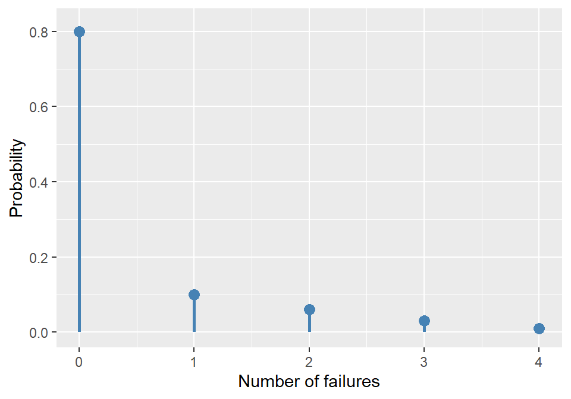
# Probability distribution of M
ggplot(data.frame(outcomes = outcomes, p = p), aes(x = outcomes, y = p)) +
geom_col(fill = "steelblue", width = 0.5) +
scale_x_continuous(breaks = outcomes) +
scale_y_continuous(limits = c(0, max(p) + 0.02)) +
labs(x = "Number of failures", y = "Probability")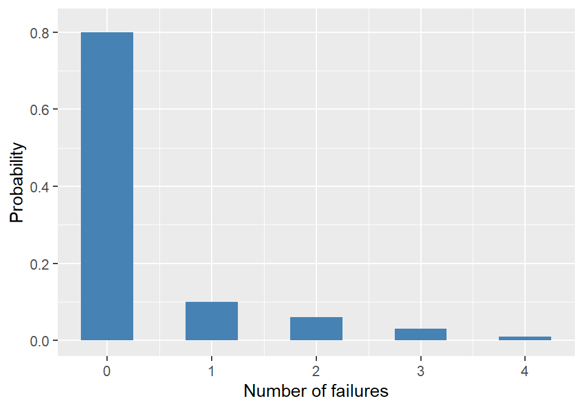
The probability of an event can be computed from the probability distribution. For example, the probability of the event of one or two failures is the sum of the probabilities of the constituent outcomes: \(P(\{M=1\}\cup \{M=2\})=P(M=1)+P(M=2)= 0.16\).
Theorem 11.2 (Properties of probability distribution functions) Let \(P(Y=y)\) be the probability distribution function of the discrete random variable \(Y\), where \(y\) is a possible value of \(Y\). The following properties hold:
- \(0\leq P(Y=y)\leq 1\) for all \(y\).
- \(\sum_{y} P(Y=y)=1\), where the sum is over all possible values of \(Y\).
Definition 11.4 A Bernoulli random variable is a discrete random variable that takes only two values.
Example 11.8 Let \(G\) be the sex of the next new person you meet, where \(G = 0\) indicates that the person is male and \(G = 1\) indicates that the person is female. Then, the \(G\) is a Bernoulli random variable with the following probability distribution: \[ \begin{align} G= \begin{cases} 1,\quad\text{with probability $p$},\\ 0,\quad\text{with probability $1-p$}. \end{cases} \end{align} \tag{11.1}\]
The cumulative probability distribution is the probability that the random variable is less than or equal to a particular value. A cumulative probability distribution is also referred to as a cumulative distribution function (CDF) or a cumulative distribution. We use \(F_Y\) to denote the CDF of the random variable \(Y\).
Definition 11.5 (Cumulative distribution function (CDF)) Let \(Y\) be a discrete random variable with probability distribution \(P(Y=y)\). Then, the CDF of \(Y\), denoted by \(F_Y\), is defined as \[ F_Y(y)=P(Y\leq y)=\sum_{y^{*}\leq y} P(Y=y^{*}), \] where the sum is over all possible values \(y^{*}\) of \(Y\) that are less than or equal to \(y\).
Example 11.9 The last row of Table 11.1 in Example 11.7 gives the cumulative probability distribution of the random variable \(M\). For example, the probability of at most one connection failure is \(P(M\leq1)=0.90\). The CDF of \(M\) is given by \[ F_M(m)=P(M\leq m)=\begin{cases} 0,\quad&\text{if } m<0,\\ 0.80,\quad&\text{if } 0\leq m<1,\\ 0.90,\quad&\text{if } 1\leq m<2,\\ 0.96,\quad&\text{if } 2\leq m<3,\\ 0.99,\quad&\text{if } 3\leq m<4,\\ 1,\quad&\text{if } m\geq 4. \end{cases} \]
In Figure 11.3, we give the plot of the CDF of \(M\). Note that the CDF takes a step at the outcome values \(m\in\{0, 1, 2, 3,4\}\) and stays constant otherwise. The height of the step at a particular point \(m\) is equal to \(P(M = m)\), the probability associated with \(m\).
# The CDF of M
# Probabilities
p <- c(0.80, 0.10, 0.06, 0.03, 0.01)
outcomes <- 0:4
# Cumulative probabilities
cdf <- cumsum(p)
cdf_full <- c(0, cdf) # start at 0 for step plot
# x values including starting point for plotting
x <- -1:5
# Prepare data frames for plotting
df_h <- data.frame(
x_start = x[1:6],
x_end = x[2:7],
y = cdf_full
)
df_v <- data.frame(
x = x[2:6],
y_min = cdf_full[1:5],
y_max = cdf_full[2:6]
)
df_points <- data.frame(
x = x[2:6],
y_top = cdf, # filled top points
y_bottom = cdf_full[1:5] # hollow bottom points
)
# Plot CDF of discrete random variable
ggplot() +
geom_segment(data = df_h, aes(x = x_start, xend = x_end, y = y, yend = y),
color = "steelblue", linewidth = 1) +
geom_segment(data = df_v, aes(x = x, xend = x, y = y_min, yend = y_max),
color = "steelblue", linetype = "dashed", linewidth = 1) +
geom_point(data = df_points, aes(x = x, y = y_top),
color = "steelblue", size = 3) +
geom_point(data = df_points, aes(x = x, y = y_bottom),
color = "steelblue", size = 2, stroke = 1.2, shape = 21) +
scale_x_continuous(breaks = x, limits = c(min(x), max(x))) +
scale_y_continuous(limits = c(-0.02, 1.02)) +
labs(x = "Outcome", y = "CDF")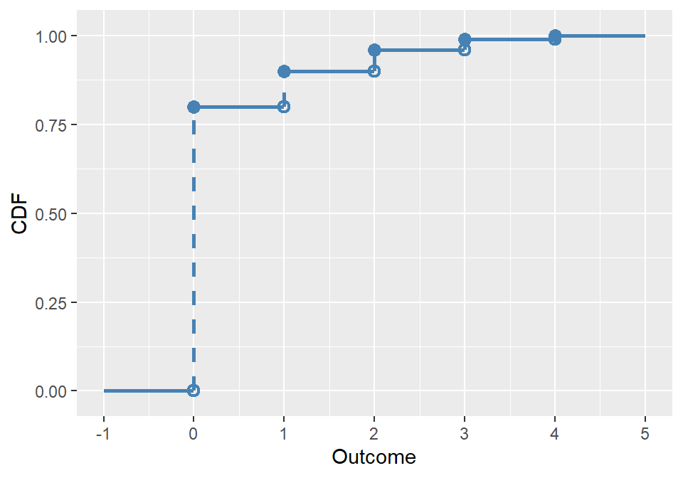
Theorem 11.3 (Properties of CDFs) Let \(F\) be the CDF of a random variable. Then, \(F\) has the following properties:
- \(F(-\infty)=\lim_{y\to-\infty}F(y)=0\),
- \(F(\infty)=\lim_{y\to\infty}F(y)=1\),
- \(F(y)\) is a nondecreasing function of \(y\), i.e., if \(y_1\) and \(y_2\) are any values such that \(y_1 < y_2\), then \(F(y_1) \leq F(y_2)\), and
- \(F(y)\) is right-continuous, i.e., \(\lim_{y\downarrow y_0}F(y)=F(y_0)\).
Example 11.10 Consider the following CDF: \[ F(y)=\begin{cases} 0, \quad&\text{if } y<0,\\ 1-e^{-y^2/2},\quad&\text{if } 0\leq y<\infty.\\ \end{cases} \] We want to show that \(F\) is a CDF. We need to check the properties of \(F\) listed in Theorem 11.3.
- \(F(-\infty)=\lim_{y\to-\infty}F(y)=0\) is satisfied since \(F(y)=0\) for \(y<0\).
- \(F(\infty)=\lim_{y\to\infty}F(y)=1\) is satisfied since \(\lim_{y\to\infty}F(y)=\lim_{y\to\infty}(1-e^{-y^2/2})=1\).
- To show that \(F(y)\) is nondecreasing, we compute its derivative: \[ F'(y)=\begin{cases} 0, \quad&\text{if } y<0,\\ e^{-y^2/2}y,\quad&\text{if } 0\leq y<\infty.\\ \end{cases} \] Since \(F'(y)\geq 0\) for all \(y\in\mathbb{R}\), we conclude that \(F(y)\) is nondecreasing.
- To show that \(F(y)\) is right-continuous, we compute \(\lim_{y\downarrow y_0}F(y)\) for any \(y_0\in\mathbb{R}\). If \(y_0<0\), then \(F(y)=0\) for all \(y<0\), and thus \(\lim_{y\downarrow y_0}F(y)=0=F(y_0)\). If \(y_0\geq 0\), then \(\lim_{y\downarrow y_0}F(y)=1-e^{-y_0^2/2}=F(y_0)\). Thus, \(F(y)\) is right-continuous.
The following code chunk generates the plot of \(F\) over the interval \([-1, 3]\). Note that the CDF is zero for \(y<0\) and increases to \(1\) as \(y\) increases.
# Plot the CDF F(y)
# Define x values
x <- seq(-1, 3, length.out = 1000)
# Define F(x) according to the piecewise function
F <- ifelse(x < 0, 0, 1 - exp(-(x^2) / 2))
# Put into a data frame for ggplot2
df <- data.frame(x = x, F = F)
# Plot
ggplot(df, aes(x = x, y = F)) +
geom_line(color = "steelblue", linewidth = 1) +
geom_vline(xintercept = 0, color = "black", linetype = "solid", alpha = 0.5) +
geom_hline(yintercept = 0, color = "black", linetype = "solid", alpha = 0.5) +
labs(x = "y", y = "F(y)") 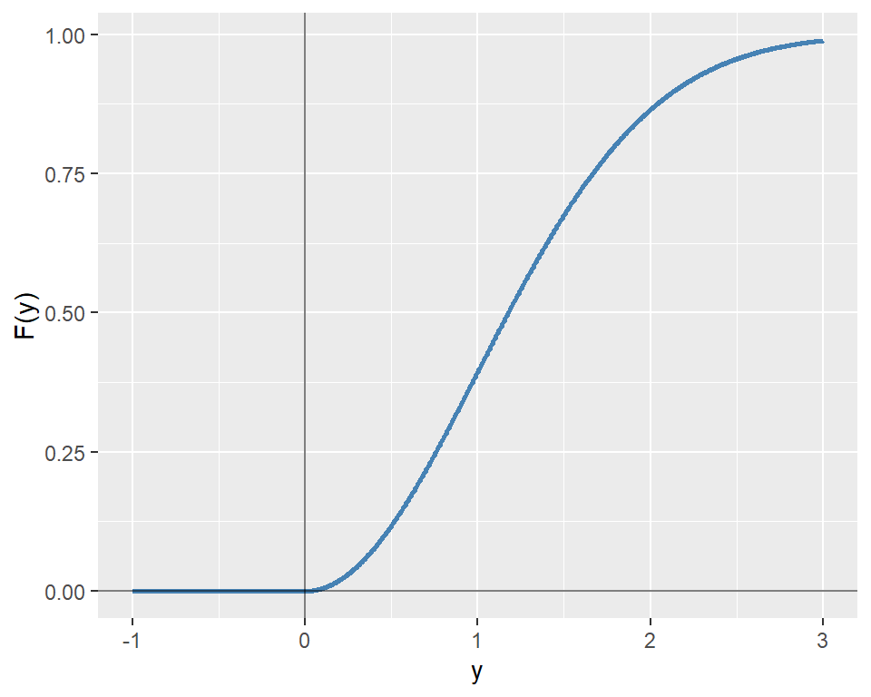
11.3 Probability distribution of a continuous random variable
A random variable is continuous if its CDF is continuous. Formally, this means that \(\lim_{y\to y_0}F(y)=F(y_0)\) for all \(y_0\in\mathbb{R}\). For a continuous random variable, we use the probability density function (PDF) to summarize probabilities. For example, the area under the probability density function between any two points represents the probability that the random variable falls between those two points. A PDF is also known as a density function or simply a density.
Definition 11.6 Let \(Y\) be a continuous random variable with CDF \(F_Y\). Then, the PDF of \(Y\), denoted by \(f_Y\), is defined as \[ f_Y(y)=\frac{\text{d}F_Y(y)}{\text{d}y}, \] provided that the derivative exists. If \(f_Y\) is the PDF of \(Y\), then the CDF of \(Y\) can be expressed as \[ F_Y(y)=\int_{-\infty}^y f_Y(t)\text{d}t. \]
Example 11.11 Let \(Y\) be a continuous random variable with the following CDF: \[ \begin{align*} F_Y(y)= \begin{cases} 0,\quad&\text{for}\quad y<0,\\ y^2,\quad&\text{for}\quad 0\leq y\leq 1,\\ 1,\quad&\text{for}\quad y>1. \end{cases} \end{align*} \] Then, the PDF of \(Y\) is given by \[ \begin{align*} f_Y(y)=\frac{d}{dy}F_Y(y)= \begin{cases} \frac{d}{dy}0=0,\quad&\text{for}\quad y<0,\\ \frac{d}{dy}y^2=2y, \quad&\text{for}\quad 0\leq y< 1,\\ \frac{d}{dy}1=0,\quad&\text{for}\quad y>1. \end{cases} \end{align*} \]
Note that \(f_Y(y)\) is not defined at \(y=1\) because \(F_Y(y)\) is not differentiable at this point. To see this, we compute the left and right derivatives of \(F_Y(y)\) at \(y=1\): \[ \begin{align*} &F^{'}_{Y-}(1)=\lim_{h\to 0^-}\frac{F_Y(1+h)-F_Y(1)}{h}=\lim_{h\to 0^-}\frac{(1+h)^2-1}{h}=2,\\ &F^{'}_{Y+}(1)=\lim_{h\to 0^+}\frac{F_Y(1+h)-F_Y(1)}{h}=\lim_{h\to 0^+}\frac{1-1}{h}=0. \end{align*} \]
The following code chunk generates the plots of the CDF and PDF of \(Y\). Note that the CDF is continuous, while the PDF is not continuous at \(y=1\). The CDF is zero for \(y\leq0\) and increases to \(1\) as \(y\) increases. The PDF is zero for \(y\leq0\), increases linearly from \(0\) to \(2\) as \(y\) increases from \(0\) to \(1\), and is zero for \(y>1\).
# CDF function
F_y <- function(y) {
case_when(
y < 0 ~ 0,
y <= 1 ~ y^2,
TRUE ~ 1
)
}
# CDF data frame
df_cdf <- tibble(
y = seq(-0.5, 1.5, length.out = 300),
F = F_y(y)
)
# CDF plot
ggplot(df_cdf, aes(x = y, y = F)) +
geom_step(color = "steelblue", linewidth = 1) +
labs(x = "y", y = "F(y)")
# PDF function
f_y <- function(y) {
case_when(
y < 0 ~ 0,
y < 1 ~ 2 * y,
TRUE ~ 0
)
}
# PDF data frame
df_pdf <- tibble(
y = seq(-0.5, 1.5, length.out = 400),
f = f_y(y)
)
# PDF plot
ggplot(df_pdf, aes(x = y, y = f)) +
geom_line(data = df_pdf[df_pdf$y < 1, ],
color = "steelblue", linewidth = 1) +
# Open circle at (1,2)
annotate("point", x = 1, y = 2, shape = 1, size = 4,
color = "steelblue", stroke = 1.5) +
# Open circle at (1,0)
annotate("point", x = 1, y = 0, shape = 1, size = 4,
color = "steelblue", stroke = 1.5) +
# Fixed line segment using annotate()
annotate("segment", x = 1, y = 0, xend = 1.5, yend = 0,
color = "steelblue", linewidth = 1.2) +
labs(x = "y", y = "f(y)")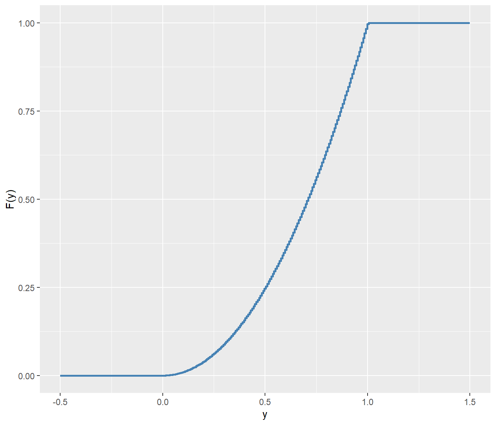
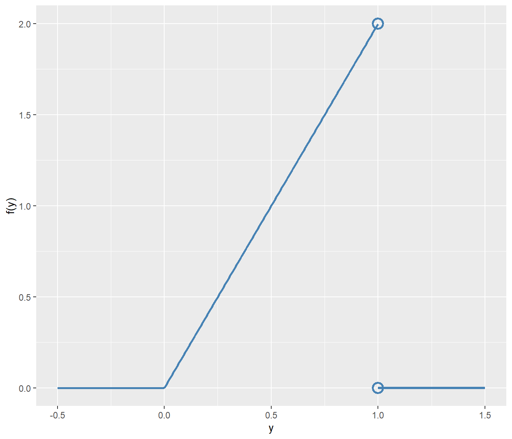
Example 11.12 Let \(Y\) be a continuous random variable with the following PDF: \[ \begin{align*} f_Y(y)=\begin{cases} 3y^{2},\quad&\text{for}\quad 0\leq y\leq 1,\\ 0,\quad&\text{otherwise}. \end{cases} \end{align*} \] Then, the CDF of \(Y\) is given by \[ \begin{align*} F(y)=\int_{-\infty}^yf(x)\text{d}x= \begin{cases} \int_{-\infty}^y0\text{d}x=0,\quad&\text{for}\quad y<0,\\ \int_{-\infty}^00\text{d}x+\int_{0}^y3x^2\text{d}x=y^3,\quad&\text{for}\quad 0\leq y\leq 1,\\ \int_{-\infty}^00\text{d}x+\int_{0}^13x^2\text{d}x+\int_{1}^y0\text{d}x=1,\quad&\text{for}\quad y>1. \end{cases} \end{align*} \]
The following code chunk generates the plots of the CDF and PDF of \(Y\). Note that the CDF is continuous, while the PDF is not continuous at \(y=1\). The CDF is zero for \(y\leq0\) and increases to \(1\) as \(y\) increases. The PDF is zero for \(y\leq0\), increases from \(0\) to \(3\) as \(y\) increases from \(0\) to \(1\), and is zero for \(y>1\).
# CDF
y_cdf <- seq(-0.5, 1.5, length.out = 100)
cdf <- ifelse(y_cdf < 0, 0, ifelse(y_cdf <= 1, y_cdf^3, 1))
df_cdf <- data.frame(y = y_cdf, F = cdf)
ggplot(df_cdf, aes(x = y, y = F)) +
geom_line(color = "steelblue", linewidth = 1) +
labs(x = "y", y = "F(y)")
# PDF
y_pdf <- seq(-0.5, 1.5, length.out = 1000)
pdf <- ifelse(y_pdf < 0, 0,
ifelse(y_pdf >= 0 & y_pdf <= 1, 3 * y_pdf^2, 0))
df_pdf <- data.frame(y = y_pdf, f = pdf)
ggplot(df_pdf, aes(x = y, y = f)) +
geom_line(data = subset(df_pdf, y <= 1),
color = "steelblue", linewidth = 1) +
geom_line(data = subset(df_pdf, y > 1),
color = "steelblue", linewidth = 1) +
# hollow point at (1,0)
annotate("point", x = 1, y = 0, shape = 21,
color = "steelblue", fill = "white", size = 4, stroke = 1) +
# filled point at (1,3)
annotate("point", x = 1, y = 3, shape = 21,
color = "steelblue", fill = "steelblue", size = 4, stroke = 1) +
labs(x = "y", y = "f(y)")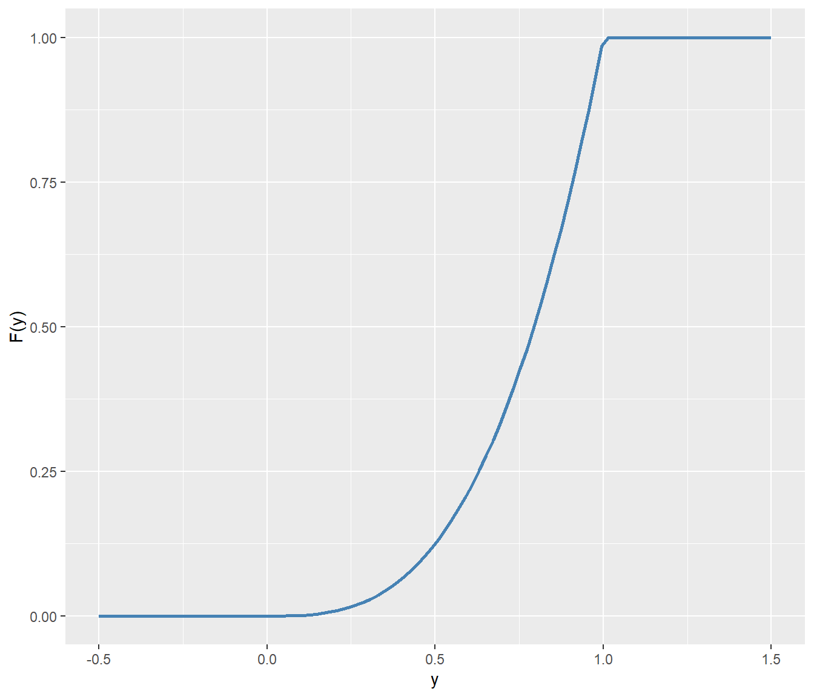
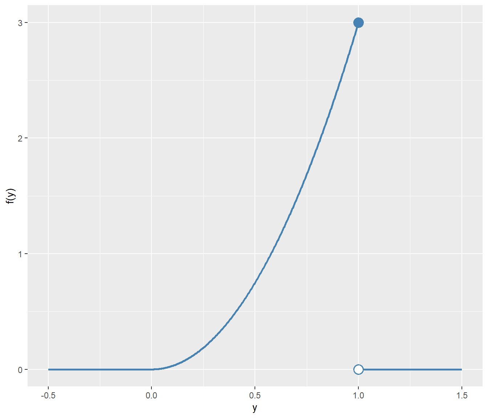
Theorem 11.4 (Properties of probability density functions) Let \(f_Y\) be the PDF of the continuous random variable \(Y\). Then, it has the following properties:
- \(f_Y(y)\geq0\) for all \(y\in\mathbb{R}\), and
- \(\int_{\mathbb{R}}f_Y(y)\text{d}y=1\).
In Theorem 11.4, the first property states that the PDF is nonnegative, while the second property states that the area under the PDF is equal to 1.
Example 11.13 Consider \(Y\) with the PDF \(f_Y(y) = 3/y^4\) for \(y>1\). We show that this is a proper density by checking the properties in Theorem 11.4. First, we note that \(f_Y(y)\geq 0\) for all \(y>1\). Second, we compute the integral of \(f_Y(y)\) over its domain: \[ \begin{align*} &\int_{1}^\infty \frac{3}{z^4}\, \text{d}z = \left.-\frac{3}{3}z^{-3}\right|_{z=1}^\infty = \left.-z^{-3}\right|_{z=1}^\infty=-\left(\lim_{t\rightarrow\infty}\frac{1}{t^3}-1\right)=1. \end{align*} \]
Thus, \(f_Y(y)\) is a proper density function. Numerically, we can use the integrate function from the stats package to compute the above integral, as illustrated below.
# Define the function
fun <- function(z) {
3 / z^4
}
# Perform the integration from 1 to infinity
result <- integrate(fun, lower = 1, upper = Inf)
# Integration result:
result$value[1] 1Theorem 11.5 Let \(Y\) be a continuous random variable with CDF \(F_Y\). Then, \(P(Y = y) = 0\) for all \(y\in\mathbb{R}\).
Proof (Proof of Theorem 11.5). Let \(\epsilon > 0\) and consider \(\{Y = y\}\subseteq \{y-\epsilon < Y\leq y\}\). Then, we have \[ \begin{align*} P(Y = y)\leq P(y-\epsilon< Y\leq y) = P(Y\leq y)-P(Y\leq y-\epsilon) = F_Y(y)-F_Y(y-\epsilon). \end{align*} \]
Since the probability function is nonnegative, we have \[ \begin{align*} 0\leq\lim_{\epsilon\to0}P(Y = y)&\leq \lim_{\epsilon\to0}\left(F_Y(y)-F_Y(y-\epsilon)\right)\\ &=F_Y(y)-\lim_{\epsilon\to0}F_Y(y-\epsilon)=0, \end{align*} \] where the last equality is ensured because \(F\) is continuous.
Theorem 11.5 indicates that if \(Y\) is a continuous random variable with the CDF \(F_Y\) and PDF \(f_Y\), then it follows that \[ \begin{align*} P(a < Y < b) &= P(a\leq Y < b) = P(a < Y \leq b) = P(a \leq Y \leq b)\\ &=F_Y(b)-F_Y(a) =\int^b_af(y)\text{d}y. \end{align*} \]
This property contrasts with discrete random variables, where the probability of the random variable taking on a specific value can be nonzero.
11.4 Expected values, mean, and variance
In addition to the PDF and CDF, the moments of a random variable can also be used to characterize its distribution. The expected value of a discrete random variable \(Y\), denoted by \(\E(Y)\), is the average value of the random variable over many repeated trials or occurrences. The expected value of \(Y\) is also called the expectation of \(Y\) or the mean of \(Y\) and is denoted \(\mu_Y\). Let \(Y\) be a discrete random variable that can take on \(k\) values, \(y_1, y_2,\dots,y_k\). Then, \[ \begin{align} \mu_Y = \E(Y) =\sum_{j=1}^k y_j \times P(Y=y_j). \end{align} \] For \(r>1\), the \(r\)’th central moment of \(Y\) is defined by \[ \begin{align} \E\left(Y - \mu_Y\right)^r = \sum_{j=1}^k (y_j-\mu_Y)^r \times P(Y=y_j). \end{align} \]
Example 11.14 Consider the random variable \(M\) with probability distribution given in Table 11.1. Then, the mean of \(M\) is \[ \begin{align} \E(M)&=\sum_{j=1}^4 m_j \times P(M=m_j)\\ &= 0 \times 0.80 + 1 \times 0.10 + 2 \times 0.06 + 3 \times 0.03 + 4 \times 0.01\\ & = 0.35. \end{align} \]
Example 11.15 The expected value of the Bernoulli random variable \(G\) defined in Equation 11.1 is \[ \E(G)=1\times p+ 0\times (1-p)=p. \]
Let \(Y\) be a continuous random variable with support \(D\subset\mathbb{R}\) and PDF \(f_Y\). Then, the expected value of \(Y\) is defined by \[ \begin{align*} \E(Y) = \int_{D} y f_Y(y)\text{d}y . \end{align*} \]
For \(r>1\), the \(r\)’th central moment of \(Y\) is
\[
\begin{align*}
\E\left(Y- \mu_Y\right)^r = \int_{D} (y -\mu_Y)^r f_Y(y)\text{d}y.
\end{align*}
\]
Example 11.16 Consider the random variable \(Y\) in Example 11.13. Then, the expected value of \(Y\) is \[ \begin{align*} \E(Y) &= \int_{1}^\infty y f_Y(y)\text{d}y = \int_{1}^\infty y \cdot \frac{3}{y^4}\text{d}y\\ &= 3\int_{1}^\infty y^{-3}\text{d}y = \left.-\frac{3}{2}y^{-2}\right|_{1}^\infty = \frac{3}{2}. \end{align*} \]
Using the integrate function from the stats package, we can compute the expected value of \(Y\) numerically as follows:
# Define the integrand for the expected value
fun <- function(y) {
y * 3 / y^4 # same as 3 / y^3
}
# Perform the integration
result <- integrate(fun, lower = 1, upper = Inf)
# Print the expected value
cat("Expected value E(Y):", result$value, "\n")Expected value E(Y): 1.5 Expectation is a linear operator, i.e., \(\E(a+bY)=a+b\E(Y)\), where \(a\) and \(b\) are two constants. Assuming that \(Y\) is a continuous random variable with the PDF \(f_Y\), we can prove this property in the following way: \[ \begin{align} \E(a+bY)&=\int(a+yb)f_Y(y)dy=a\int f_Y(y)dy+b\int yf_Y(y)dy\\ &=a+b\E(Y), \end{align} \] where we use the fact that \(\int f_Y(y)dy=1\) in the third equality.
Theorem 11.6 (Properties of expectation) Let \(Y\) be a random variable and \(g\) be a real-valued function. Then, the expectation of \(g(Y)\) is given by:
- Discrete case: \(\E(g(Y))=\sum_{j=1}^k g(y_j)P(Y=y_j)\), where \(y_j\) are the possible values of \(Y\).
- Continuous case: \(\E(g(Y))=\int_D g(y)f_Y(y)\text{d}y\), where \(D\) is the support of \(Y\).
Proof (Proof of Theorem 11.6). See Wackerly et al. (2008).
Example 11.17 Let \(G\) be the Bernoulli random variable defined in Example 11.8. Then, using Theorem 11.6, we can compute the expected value of \(G^3\) as follows: \[ \begin{align*} \E(G^3)=1^3\times p+0^3\times(1-p)=p. \end{align*} \]
The second central moment of a random variable is the variance of the random variable, denoted by \(\text{var}(Y)\) or \(\sigma^2_Y\). The square root of the variance is called the standard deviation, denoted by \(\sigma_Y\). The variance and standard deviation measure the dispersion or the spread of the probability distribution.
Example 11.18 Let \(M\) be the number of times your wireless network connection fails while you are writing a term paper. Using Table 11.1, we compute \(\sigma^2_Y\) as \[ \begin{align*} \sigma_M^2 &= \sum_{j=1}^5 (m_j-\mu_M)^2 \times P(M=m_j) \\ &= (0-0.35)^2\times0.80 + (1-0.35)^2\times0.10 \\ &+ (2-0.35)^2\times0.06 + (3-0.35)^2\times0.03+ (4-0.35)^2\times0.01\\ & = 0.6475. \end{align*} \]
We can use skewness to measure the asymmetry of the probability distribution of a random variable. The skewness of the distribution of \(Y\) is defined by \[ \begin{align} \text{Skewness}=\frac{\E\left[\left(Y - \mu_Y\right)^3\right]}{\sigma_Y^3}. \end{align} \]
Skewness is unit-free; that is, changing the units of \(Y\) does not affect its skewness. Based on this measure, we can identify the following cases:
- Skewness\(=0\): The distribution of \(Y\) is symmetric around \(\mu_Y\).
- Skewness\(>0\): The distribution of \(Y\) is right-skewed, with a long right tail.
- Skewness\(<0\): The distribution of \(Y\) is left-skewed, with a long left tail.
The kurtosis is the fourth standardized moment of \(Y\). It measures the extent to which the probability mass of a distribution is concentrated in the tails. For the random variable \(Y\), it is defined by \[ \begin{align} \text{Kurtosis}=\frac{\E\left[\left(Y - \mu_Y\right)^4\right]}{\sigma_Y^4}. \end{align} \]
We distinguish between the following cases:
- If \(\text{Kurtosis}=3\), then \(Y\) has the same kurtosis as the normal distribution.
- If \(\text{Kurtosis}>3\), then the distribution of \(Y\) has heavier (fatter) tails than the normal distribution; this is referred to as leptokurtic.
In Figure 11.7, we show the density plots of the standard normal distribution, the skewed normal distribution, the gamma distribution, and the Laplace distribution. The standard normal distribution is symmetric, the skewed-normal distribution is left-skewed, the gamma distribution is right-skewed, and the Laplace distribution is leptokurtotic.
# Shape of distributions
# --- 1. Symmetric (Normal) ---
x_symmetric <- seq(-4, 4, length.out = 1000)
symmetric_pdf <- dnorm(x_symmetric, mean = 0, sd = 1)
df_sym <- data.frame(x = x_symmetric, y = symmetric_pdf)
ggplot(df_sym, aes(x, y)) +
geom_line(color = "blue") +
geom_area(fill = "blue", alpha = 0.2) +
labs(title = "Normal distribution")
# --- 2. Left-skewed (Skew-normal with a = -4) ---
x_skewed_left <- seq(-4, 1, length.out = 1000)
left_skewed_pdf <- dsn(x_skewed_left, xi = 0, omega = 1, alpha = -4)
df_left <- data.frame(x = x_skewed_left, y = left_skewed_pdf)
ggplot(df_left, aes(x, y)) +
geom_line(color = "red") +
geom_area(fill = "red", alpha = 0.2) +
labs(title = "Skew-normal distribution (left skewed)")
# --- 3. Right-skewed (Gamma, shape = 2) ---
x_skewed_right <- seq(0, 8, length.out = 1000)
right_skewed_pdf <- dgamma(x_skewed_right, shape = 2)
df_gamma <- data.frame(x = x_skewed_right, y = right_skewed_pdf)
ggplot(df_gamma, aes(x, y)) +
geom_line(color = "green") +
geom_area(fill = "green", alpha = 0.2) +
labs(title = "Gamma distribution (right skewed)")
# --- 4. Leptokurtic (Laplace) ---
x_lepto <- seq(-4, 4, length.out = 1000)
leptokurtic_pdf <- dlaplace(x_lepto, mu = 0, sigma = 1)
df_lepto <- data.frame(x = x_lepto, y = leptokurtic_pdf)
ggplot(df_lepto, aes(x, y)) +
geom_line(color = "purple") +
geom_area(fill = "purple", alpha = 0.2) +
geom_line(data = df_sym, aes(x, y), color = "blue") + # overlay normal
labs(title = "Laplace distribution vs Normal") 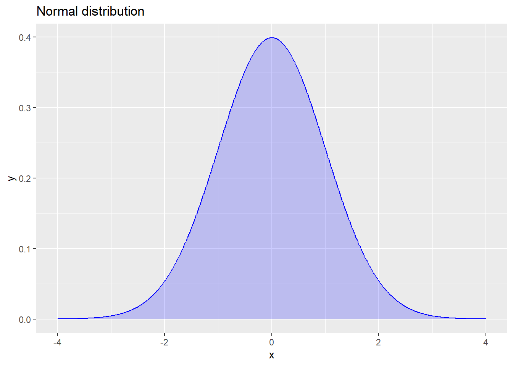
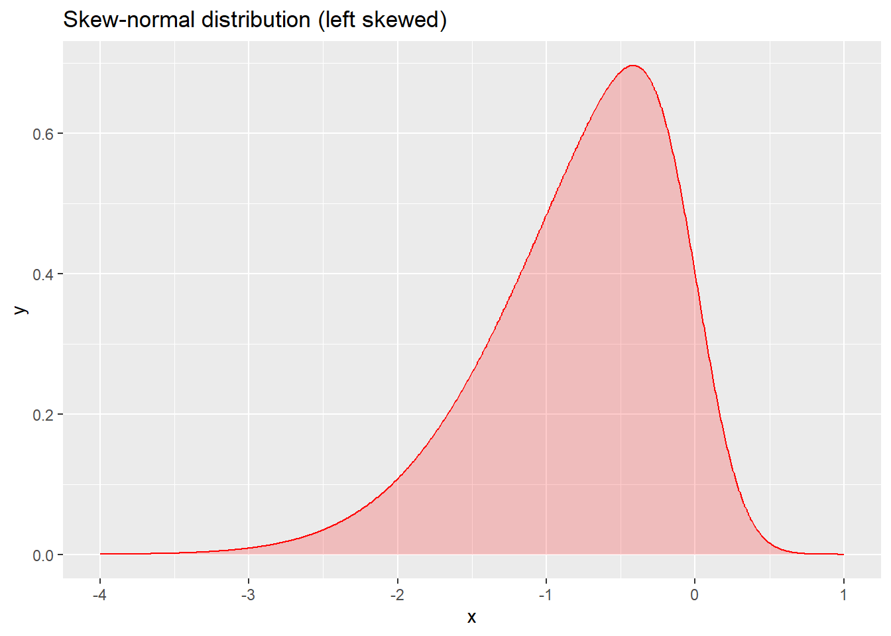
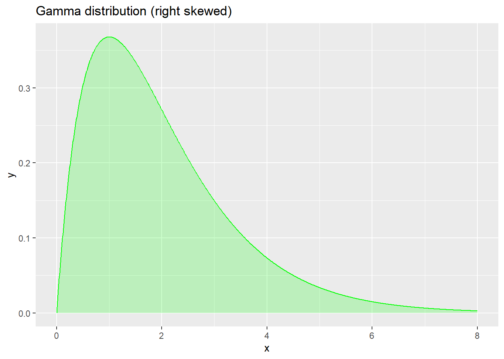
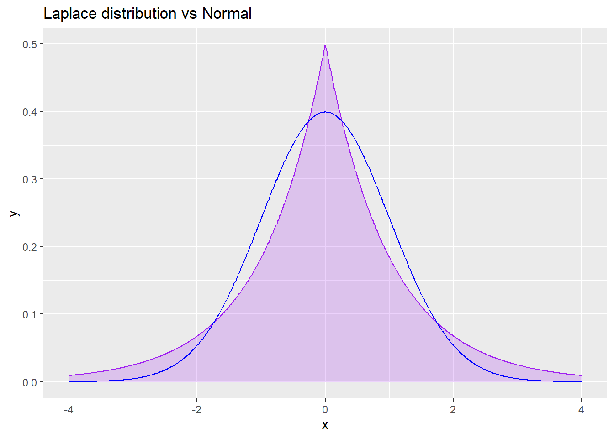
Example 11.19 Let \(G\) be the Bernoulli random variable defined in Equation 11.1 with \(p=0.7\). Note that \(\E(G)=p\) and \(\sigma^2_G=p(1-p)\). Then, the skewness of \(G\) is given by \[ \begin{align*} \text{Skewness} &= \frac{\E\left[(G - \mu_G)^3\right]}{\sigma_G^3} = \frac{p(1-p)(1-2p)}{(p(1-p))^{3/2}}\\ &= \frac{0.7(1-0.7)(1-2\times0.7)}{(0.7(1-0.7))^{3/2}} = −0.872. \end{align*} \]
The kurtosis of \(G\) is given by \[ \begin{align*} \text{Kurtosis} &= \frac{\E\left[(G - \mu_G)^4\right]}{\sigma_G^4} = \frac{(0-p)^4(1-p)+(1-p)^4p}{(p(1-p))^2}\\ &= \frac{(-0.7)^4(1-0.7)+(1-0.7)^4\times0.7}{(0.7(1-0.7))^2} = 1.762. \end{align*} \]
In the following code chunk, we generate 1000 draws from the Bernoulli distribution with \(p=0.7\) and then generate the stem plot of the draws. The stem plot shows that the distribution of \(G\) is skewed to the left, i.e., the probability of \(G=1\) is higher than the probability of \(G=0\).
# Generate 1000 draws from Bernoulli(p = 0.7)
n_draws <- 1000
draws <- rbinom(n_draws, size = 1, prob = 0.7)
# Compute probabilities (relative frequencies)
df <- as.data.frame(table(draws))
df$draws <- as.numeric(as.character(df$draws))
df$prob <- df$Freq / n_draws
# Create a stem-style plot in ggplot2
ggplot(df, aes(x = draws, y = prob)) +
geom_segment(aes(xend = draws, yend = 0), linewidth = 1, color = "steelblue") +
geom_point(size = 3, color = "steelblue") +
scale_x_continuous(breaks = c(0, 1), labels = c("0", "1")) +
labs(x = "Value", y = "Probability")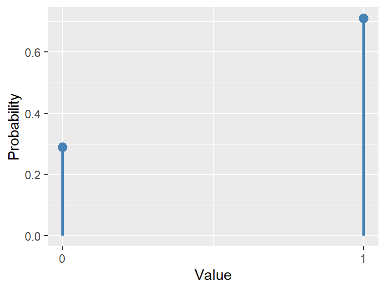
Definition 11.7 (Quantiles and percentiles) Let \(Y\) be a random variable and let \(0 < p < 1\). The \(p\)th quantile of \(Y\), denoted by \(q_p\), is the smallest value such that \(F(q_p) = P(Y \leq q_p) \geq p\). If \(Y\) is continuous, then \(F(q_p) = p\). The \(p\)th quantile is also known as the \(100p\)th percentile of \(Y\).
Note that \(q_{0.5}\) is the median, \(q_{0.25}\) is the first quartile, and \(q_{0.75}\) is the third quartile of \(Y\).
Example 11.20 Let \(Y\) be a continuous random variable with the following CDF: \[ \begin{align*} F_Y(y)= \begin{cases} 0,\quad&\text{for}\quad y<0,\\ 1-\left(\frac{4.5}{4.5+y}\right)^3,\quad&\text{for}\quad y\geq 0. \end{cases} \end{align*} \] The median of \(Y\), i.e., \(q_{0.5}\), can be computed as follows: \[ \begin{align*} &F(q_{0.5})=0.5\implies 1-\left(\frac{4.5}{4.5+y}\right)^3=0.5\implies\frac{4.5}{4.5+q_{0.5}}=(0.5)^{1/3}\\ &\implies q_{0.5}\approx 1.17. \end{align*} \]
The PDF of \(Y\) is given by \[ \begin{align*} f_Y(y) = \frac{d}{dy} F_Y(y) = \begin{cases} 0,\quad&\text{for}\quad y < 0, \\ 3 \times (4.5)^3 \times (4.5 + y)^{-4}, \quad&\text{for}\quad y \geq 0. \end{cases} \end{align*} \]
In the following code chunk, we generate plots of the CDF and PDF of \(Y\). In the CDF plot, we highlight the point at \(y = 1.17\), which corresponds to the median of \(Y\). In the PDF plot, the shaded area under the curve between \(y = 0\) and \(y = 1.17\) is \(0.50\).
# Generate y values
y_cdf <- seq(-0.5, 5, length.out = 100)
# CDF function
cdf <- ifelse(y_cdf < 0, 0,
1 - (4.5 / (4.5 + y_cdf))^3)
cdf_df <- data.frame(y = y_cdf, cdf = cdf)
# Point at y = 1.17
y_median <- 1.17
cdf_median <- 1 - (4.5 / (4.5 + y_median))^3
ggplot(cdf_df, aes(x = y, y = cdf)) +
geom_line(linewidth=1, color = "steelblue") +
geom_point(aes(x = y_median, y = cdf_median),
color = "red", size =4) +
annotate("text",
x = y_median, y = cdf_median,
label = sprintf("(%.2f, %.2f)", y_median, cdf_median),
hjust = -0.1, vjust = -0.5, size = 4) +
labs(x = "y", y = "F(y)")
# Generate y values for PDF
y_pdf <- seq(-0.5, 5, length.out = 1000)
# PDF function
pdf <- ifelse(y_pdf < 0, 0,
3 * (4.5^3) * (4.5 + y_pdf)^(-4))
pdf_df <- data.frame(y = y_pdf, pdf = pdf)
# Shaded region 0 ≤ y ≤ 1.17
shade_df <- pdf_df %>% filter(y >= 0 & y <= y_median)
ggplot(pdf_df, aes(x = y, y = pdf)) +
geom_line(linewidth = 1, color = "steelblue") +
geom_point(aes(x = y_median, y = 0), color = "red", size = 4) +
annotate("text",
x = y_median, y = 0,
label = sprintf("(%.2f, 0)", y_median),
hjust = -0.1, vjust = -0.5, size = 4) +
geom_area(data = shade_df, aes(x = y, y = pdf), alpha = 0.3) +
labs(x = "y", y = "f(y)")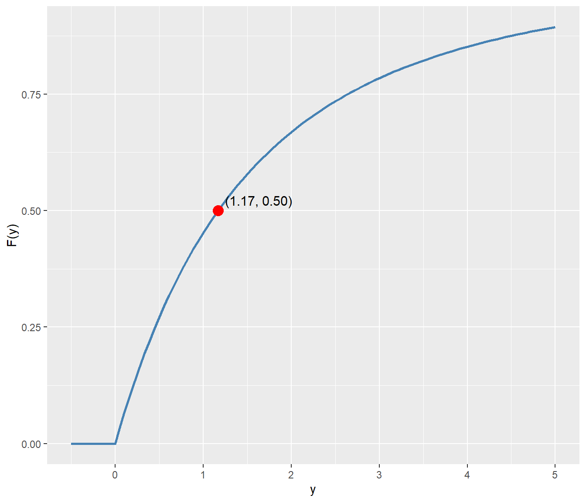
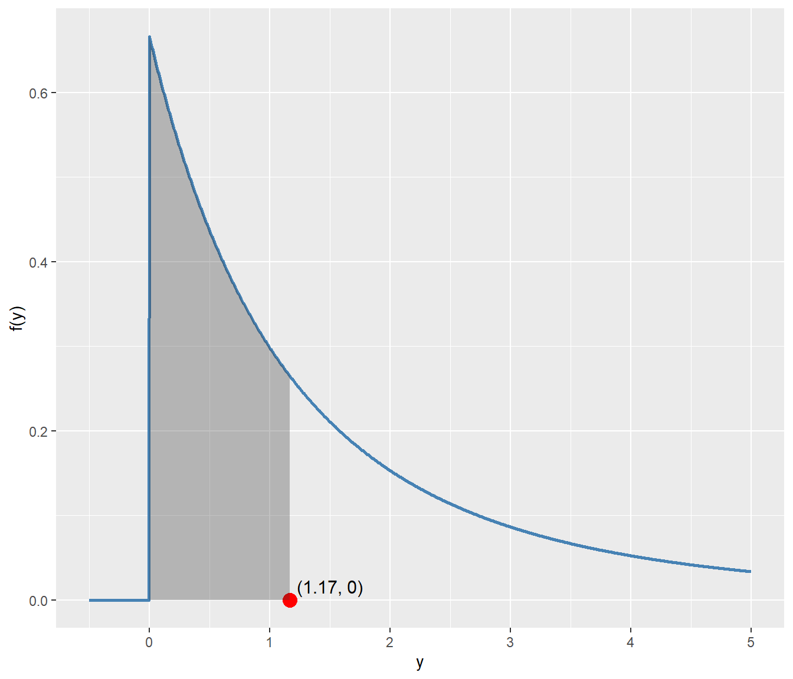
11.5 Two random variables
In this section, we consider joint probability distributions of two random variables.
11.5.1 Joint and marginal distributions
Definition 11.8 (Joint probability distribution) The joint probability distribution of two discrete random variables \(X\) and \(Y\) is the probability that the random variables simultaneously take on certain values, say \(x\) and \(y\). The joint probability distribution is written as \(P(X=x,Y=y)\).
We usually use tables to represent the joint probability distribution of two discrete random variables, as illustrated in the following example.
Example 11.21 Let \(Y\) be a binary random variable that equals \(1\) if the commute to school is short (less than 20 minutes) and that equals \(0\) otherwise, and let \(X\) be a binary random variable that equals \(0\) if it is raining and \(1\) if not. We assume that the joint probability distribution of \(X\) and \(Y\) is given in Table 11.2.
# Joint probability distribution of weather conditions and commuting times
p1 = c(0.15, 0.07, 0.22)
p2 = c(0.15, 0.63, 0.78)
p3 = c(0.30, 0.70, 1.00)
y = data.frame(rbind(p1, p2, p3))
rownames(y) = c("Long commute (Y=0)", "Short commute (Y = 1)", "Total")
colnames(y) = c("Rain (X=0)", "No Rain (X=1)", "Total")
kable(y, align = "c")| Rain (X=0) | No Rain (X=1) | Total | |
|---|---|---|---|
| Long commute (Y=0) | 0.15 | 0.07 | 0.22 |
| Short commute (Y = 1) | 0.15 | 0.63 | 0.78 |
| Total | 0.30 | 0.70 | 1.00 |
Using Table 11.2, the probability of having a rainy day and a long commute is \(P(X=0,Y=0)=0.15\).
Theorem 11.7 (Properties of joint probability distributions) Let \(X\) and \(Y\) be two discrete random variables. Then, the joint probability distribution has the following properties: (i) \(P(X=x,Y=y)\geq0\) for all \(x\) and \(y\), and (ii) \(\sum_{x}\sum_{y}P(X=x,Y=y)=1\).
The first property states that the joint probabilities are nonnegative, while the second property states that the sum of all joint probabilities is equal to 1.
From the joint probability distribution, we can derive the marginal probability distributions of \(X\) and \(Y\).
Definition 11.9 (Marginal distributions) If \(X\) can take on \(l\) different values \(x_1,\dots,x_\ell\), then the marginal probability that \(Y\) takes on the value \(y\) is \[ \begin{align} P(Y=y)=\sum_{i=1}^\ell P(Y=y, X=x_i). \end{align} \]
Example 11.22 Consider the joint probability distribution of \(X\) and \(Y\) given in Table 11.2. Then, the probability of a long commute, i.e., \(P(Y=0)\), is \[ \begin{align*} P(Y=0)&=\sum_{i=1}^\ell P(Y=0, X=x_i)\\ &=P(Y=0,X=0)+P(Y=0,X=1)\\ &=0.15+0.07=0.22. \end{align*} \] In Table 11.2, the row sums give the marginal probability distribution of \(Y\), while the column sums give the marginal probability distribution of \(X\).
Definition 11.10 (Joint cumulative distribution function) The joint cumulative distribution function (CDF) of two random variables \(X\) and \(Y\) is defined as \[ \begin{align} F_{X,Y}(x,y) = P(X\leq x, Y\leq y). \end{align} \]
Note that if \(X\) is a discrete random variable, taking values \(x_1,\dots,x_\ell\), and \(Y\) is a discrete random variable taking values \(y_1,\dots,y_k\), then the joint CDF can be computed as \[ \begin{align*} F_{X,Y}(x,y) &= P(X\leq x, Y\leq y)\\ &= \sum_{x_i\leq x}^\ell\sum_{y_j\leq y}^k P(X=x_i,Y=y_j), \end{align*} \] where the first summation is over all values of \(X\) that are less than or equal to \(x\), and the second summation is over all values of \(Y\) that are less than or equal to \(y\).
Example 11.23 Consider the joint probability distribution of \(X\) and \(Y\) given in Table 11.2. Then, the joint CDF of \(X\) and \(Y\) at \((0,1)\) is \[ \begin{align*} F_{X,Y}(0,1) &= P(X\leq 0, Y\leq 1)\\ &= P(X=0,Y=0)+P(X=0,Y=1)\\ &= 0.15+0.15=0.30. \end{align*} \]
Definition 11.11 (Joint probability density function) Let \(X\) and \(Y\) be two continuous random variables with joint CDF \(F_{X,Y}(x,y)\). If there exists a function \(f_{X,Y}(x,y)\) such that \[ \begin{align} F_{X,Y}(x,y) = \int_{-\infty}^x\int_{-\infty}^y f_{X,Y}(u,v)\text{d}v\text{d}u, \end{align} \] then \(f_{X,Y}(x,y)\) is called the joint probability density function (PDF) of \(X\) and \(Y\).
The joint PDF \(f_{X,Y}(x,y)\) is always nonnegative, i.e., \(f_{X,Y}(x,y)\geq 0\) for all \(x\) and \(y\), and its integral over the entire space is equal to \(1\): \[ \begin{align} \int_{-\infty}^\infty\int_{-\infty}^\infty f_{X,Y}(x,y)\text{d}y\text{d}x = 1. \end{align} \]
Definition 11.10 suggests that if \(X\) and \(Y\) are continuous random variables, then their joint CDF can be written as \[ \begin{align*} F_{X,Y}(x,y) &= P(X\leq x, Y\leq y)\\ &= \int_{-\infty}^x\int_{-\infty}^y f_{X,Y}(u,v)\text{d}v\text{d}u. \end{align*} \]
Example 11.24 Let \(X\) and \(Y\) be two continuous random variables with joint PDF given by \[ \begin{align*} f(x,y)= \begin{cases} 30xy^2,\quad&x-1\leq y\leq 1-x,\, 0\leq x\leq1,\\ 0,\quad&\text{elsewhere}. \end{cases} \end{align*} \]
We want to compute \(F_{X,Y}(0.5, 0.5)\). The following code chunk illustrates the integration region, which is defined by the intersection of the inequalities \(x - 1 \leq y \leq 1 - x\), \(0 \leq x \leq 1\), \(x \leq 0.5\), and \(y \leq 0.5\). In Figure 11.10, this region is shaded in orange. The joint CDF \(F_{X,Y}(0.5, 0.5)\) is given by the integral of the joint PDF over this region. \[ \begin{align*} F(0.5,0.5)&=P(X\leq0.5, Y\leq0.5)=\int_{0}^{0.5}\int_{x-1}^{0.5}30xy^2dydx\\ &=\int_{0}^{0.5}\left(10xy^3\bigg|^{y=0.5}_{y=x-1}\right)dx=\int_{0}^{0.5}\left(\frac{10x}{8}-10x(x-1)^3\right)dx=9/16. \end{align*} \]
# Generate x values
x <- seq(0, 1, length.out = 100)
# Lower and upper bounds
y_lower <- x - 1
y_upper <- 1 - x
df <- data.frame(
x = x,
y_lower = y_lower,
y_upper = y_upper
)
# Subregion for shading when x <= 0.5 and y <= 0.5
df_sub <- subset(df, x <= 0.5)
df_sub$y_upper_shade <- pmin(df_sub$y_upper, 0.5)
# Plot
ggplot() +
# Full support region
geom_ribbon(
data = df,
aes(x = x, ymin = y_lower, ymax = y_upper),
fill = "steelblue", alpha = 0.3
) +
# Subregion shading
geom_ribbon(
data = df_sub,
aes(x = x, ymin = y_lower, ymax = y_upper_shade),
fill = "orange", alpha = 0.7
) +
# Axes lines
geom_hline(yintercept = 0, linetype = "dashed", color = "black", linewidth = 0.4) +
geom_vline(xintercept = 0, linetype = "dashed", color = "black", linewidth = 0.4) +
# Reference lines
geom_vline(xintercept = 0.5, linetype = "dashed", color = "red", linewidth = 0.7) +
geom_hline(yintercept = 0.5, linetype = "dashed", color = "green", linewidth = 0.7) +
scale_x_continuous(limits = c(0, 1)) +
scale_y_continuous(limits = c(-1, 1)) +
labs(x = "x", y = "y") 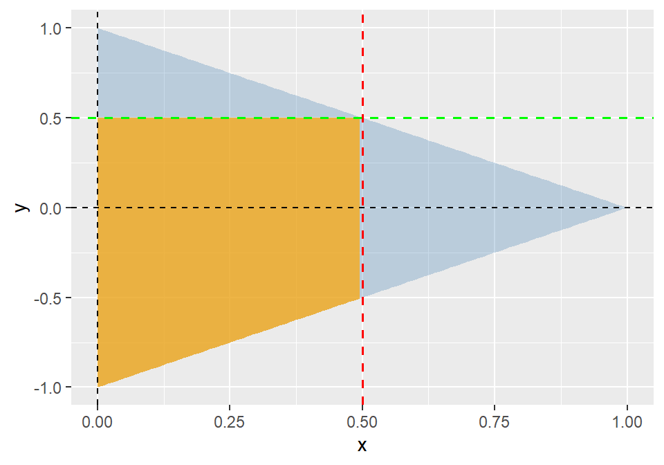
Using the integral2 function from the pracma package, we can compute the joint CDF \(F_{X,Y}(0.5, 0.5)\) numerically as follows:
# Joint PDF function
joint_pdf <- function(x, y) {
30 * x * y^2
}
# Lower and upper limits for y
y_lower <- function(x) { x - 1 }
y_upper <- function(x) { 0.5 }
# Perform double integration over:
# x ∈ [0, 0.5]
# y ∈ [x - 1, 0.5]
result <- integral2(
f = joint_pdf,
xmin = 0, xmax = 0.5,
ymin = y_lower,
ymax = y_upper
)
cat("Joint CDF F_{X,Y}(0.5, 0.5):", result$Q)Joint CDF F_{X,Y}(0.5, 0.5): 0.5625Definition 11.12 (Marginal probability density function) Let \(X\) and \(Y\) be two continuous random variables with joint PDF \(f_{X,Y}(x,y)\). The marginal probability density function (PDF) of \(X\) is given by \[ \begin{align} f_X(x) = \int_{-\infty}^\infty f_{X,Y}(x,y)\text{d}y. \end{align} \] The marginal PDF of \(Y\) is given by \[ \begin{align} f_Y(y) = \int_{-\infty}^\infty f_{X,Y}(x,y)\text{d}x. \end{align} \]
11.5.2 Conditional distributions and conditional moments
From the joint and marginal distributions, we can derive the conditional distribution of one random variable given the other.
Definition 11.13 (Conditional distribution) Let \(X\) and \(Y\) be two discrete random variables. Then, the conditional distribution of \(Y\) given \(X=x\) is given by \[ \begin{align} P(Y=y |X=x) = \frac{P(Y=y,X=x)}{P(X=x)}. \end{align} \]
Definition 11.13 indicates that \(P(Y=y |X=x)\) is the likelihood of the event that \(Y\) takes the value \(y\) given that \(X=x\) has happened.
Example 11.25 Consider the joint probability distribution of \(X\) and \(Y\) given in Table 11.2. Then, the likelihood of a short commute given that it is raining outside is \[ \begin{align*} P(Y=1 |X=0) = \frac{P(Y=1,X=0)}{P(X=0)} = 0.15/0.30 = 0.50. \end{align*} \]
The likelihood of no rain outside given that it has been a short commute is \[ \begin{align*} P(X=1 |Y=1) = \frac{P(X=1,Y=1)}{P(Y=1)} = 0.63/0.78 = 0.81. \end{align*} \]
Definition 11.14 (Conditional probability density function) Let \(X\) and \(Y\) be two continuous random variables with joint PDF \(f_{X,Y}(x,y)\). The conditional probability density function (PDF) of \(Y\) given \(X=x\) is given by \[ \begin{align} f_{Y|X}(y|x) = \frac{f_{X,Y}(x,y)}{f_X(x)}. \end{align} \]
Using the conditional distribution, we can define conditional moments. We use \(\E(Y|X)\) to denote the conditional mean of \(Y\) given \(X\). When the value \(X\) is not specified, \(\E(Y|X)\) becomes random. However, if the value of \(X\) is specified, say \(X=x\), then \(\E(Y|X=x)\) is a fixed quantity and is not random.
Definition 11.15 (Conditional expectation) Let \(X\) and \(Y\) be two discrete random variables, and suppose that \(Y\) takes on \(k\) values: \(y_1, y_2, \dots, y_k\). Then, the conditional expectation of \(Y\) given \(X = x\) is defined as \[ \begin{align} \E(Y|X=x) = \sum_{j=1}^k y_jP(Y=y_j|X=x). \end{align} \]
If \(X\) and \(Y\) are continuous random variables with conditional density function \(f_{Y|X}\), then the conditional expectation of \(Y\) given \(X = x\) is defined as \[ \begin{align} \E(Y|X=x) = \int_{-\infty}^\infty y f_{Y|X}(y|x)\text{d}y. \end{align} \]
The other conditional moments of \(Y\) given \(X\) can be defined in a similar way as in Definition 11.15. For example, the conditional variance of \(Y\) given \(X = x\) is defined as \[ \begin{align} \text{var}(Y|X=x) = \sum_{j=1}^k \big(y_j - \E(Y|X=x)\big)^2P(Y=y_j|X=x). \end{align} \]
Example 11.26 Consider the joint probability distribution of \(X\) and \(Y\) given in Table 11.2. Then, the expected value of commute given that it is not a rainy day is \[ \begin{align*} \E(Y|X=1)&=1\times P(Y=1|X=1)+0\times P(Y=0|X=1)=0.63/0.70=0.9. \end{align*} \]
The variance of commute given that it is not a rainy day is \[ \begin{align*} \text{var}(Y|X=1)&=(1-0.9)^2\times P(Y=1|X=1)+(0-0.9)^2\times P(Y=0|X=1)\\ &=(0.1)^2\times0.9+(-0.9)^2\times0.1=0.09. \end{align*} \]
11.5.3 Properties of conditional expectations
The conditional expectation plays a central role in econometrics, and therefore it is important to understand its properties.
Let \(X\) be a random variable and \(g\) a function defined on the support of \(X\). Then, the conditional expectation of \(g(X)\) given \(X\) is \[ \begin{align} \E(g(X)|X) = g(X) \end{align} \]
This means that the conditional expectation of a function of a random variable, given that random variable, is equal to the function itself. Intuitively, if we know the value of \(X\), then \(g(X)\) becomes a fixed quantity, and its conditional expectation given \(X\) is equal to itself.
Just like the expectation of a random variable, the conditional expectation is a linear operator. This means that if \(X\), \(Y\) and \(Z\) are random variables, then for any constants \(a\) and \(b\), we have \[ \begin{align} \E(aX + bY | Z) = a\E(X | Z) + b\E(Y | Z). \end{align} \]
Another important property of conditional expectations is the law of iterated expectations. This law states that the unconditional expectation of a random variable can be expressed as the expectation of its conditional expectation given another random variable.
Theorem 11.8 (Law of iterated expectations (LIE)) Let \(X\) and \(Y\) be two random variables. Then, \[ \begin{align} \E(Y) = \E\left(\E(Y|X)\right), \end{align} \] where the outer expectation is with respect to the marginal distribution of \(X\).
Let \(X\) and \(Y\) be two discrete random variables, taking values \(x_1,\dots,x_\ell\) and \(y_1,\dots,y_k\). The LIE suggests that the unconditional expectation of \(Y\), i.e., \(\E(Y)\), can be defined as the weighted average of the conditional expectations of \(Y\) given \(X\), where the weights come from the marginal distribution of \(X\): \[ \begin{align} \E(Y) =\E\left(\E(Y|X)\right)= \sum_{i=1}^\ell \E(Y|X=x_i) P(X=x_i). \end{align} \]
Proof (Proof of Theorem 11.8). Let \(X\) and \(Y\) be discrete random variables taking values \(x_1,\dots,x_\ell\) and \(y_1,\dots,y_k\). Then, \[ \begin{align} \E\left(\E(Y|X)\right)&=\sum_{i=1}^\ell\E(Y|X=x_i)P(X=x_i)\\ &=\sum_{i=1}^\ell\sum_{j=1}^ky_jP(Y=y_j|X=x_i)P(X=x_i)\\ &=\sum_{i=1}^\ell\sum_{j=1}^ky_j\frac{P(Y=y_j,X=x_i)}{P(X=x_i)}P(X=x_i)\\ &=\sum_{i=1}^\ell\sum_{j=1}^ky_jP(Y=y_j,X=x_i)\\ &=\sum_{j=1}^ky_j\sum_{i=1}^\ell P(Y=y_j,X=x_i)\\ &=\sum_{j=1}^ky_jP(Y=y_j)\\ &=\E(Y), \end{align} \] where the sixth equality follows from \(\sum_{i=1}^\ell P(Y=y_j,X=x_i)=P(Y=y_j)\). If \(X\) and \(Y\) are continuous random variables with densities \(f_X\) and \(f_Y\), then we have \[ \begin{align} \E\left(\E(Y|X)\right)&=\int\E(Y|X=x)f_X(x)dx\\ &=\int\int yf_{Y|X}(y|x)f_X(x)dydx\\ &=\int\int y\frac{f_{Y,X}(y,x)}{f_X(x)}f_X(x)dydx\\ &=\int\int yf_{Y,X}(y,x)dydx\\ &=\int yf_{Y}(y)dy\\ &=\E(Y). \end{align} \]
The next theorem gives a result related to LIE, which is useful when we have more than one conditioning variable.
Theorem 11.9 Let \(X\), \(Y\), and \(Z\) be random variables, and assume that their expectations exist. Then, we have \[ \begin{align*} \E(Y|X)=\E(\E(Y|X,Z)|X). \end{align*} \]
Proof (Proof of Theorem 11.9). To prove this result, we assume that these variables have joint density \(f_{X,Y,Z}(x,y,z)\). Then, we have \[ \begin{align*} \E(Y|X=x)&= \int yf_{Y|X}(y|x)dy=\int\int yf_{Y,Z|X}(y,z|x)dzdy. \end{align*} \] We have \(f_{Y|Z,X}(y|z,x)=\frac{f_{Y,Z|X}(y,z|x)}{f_{Z|X}(z|x)}\), suggesting that \(f_{Y,Z|X}(y,z|x)=f_{Y|Z,X}(y|z,x)\times f_{Z|X}(z|x)\). Thus, \[ \begin{align*} \E(Y|X=x)&=\int\int yf_{Y|Z,X}(y|z,x)f_{Z|X}(z|x)dzdy\\ &=\int\left(\int yf_{Y|Z,X}(y|z,x)dy\right)f_{Z|X}(z|x)dz\\ &=\int\E(Y|X=x,Z=z)f_{Z|X}(z|x)dz\\ &=\E(\E(Y|X,Z)|X=x). \end{align*} \]
11.5.4 Independence and measures of linear dependence
Definition 11.16 (Independence of random variables) The discrete random variables \(X\) and \(Y\) are independently distributed, or independent, if for all values of \(x\) and \(y\), we have \[ \begin{align*} P(Y=y,X=x) = P(Y=y)P(X=x). \end{align*} \] Similarly, the continuous random variables \(X\) and \(Y\) are independent if and only if \(f_{X,Y}(x,y)=f_X(x)\times f_Y(y)\).
Note that Definition 11.16 also implies that if \(X\) and \(Y\) are independent, then the conditional distribution of \(Y\) given \(X\) is equal to the marginal distribution of \(Y\). That is, in the discrete case, we have \(P(Y=y|X=x) = P(Y=y)\), and in the continuous case, \(f_{Y|X}(y|x) = f_Y(y)\).
If \(X\) and \(Y\) are independent random variables, then the conditional expectation of \(Y\) given \(X\) is equal to the unconditional expectation of \(Y\): \[ \begin{align} \E(Y|X) = \E(Y). \end{align} \]
This is because, when \(X\) and \(Y\) are independent, knowing the value of \(X\) provides no information about \(Y\). As a result, the conditional expectation of \(Y\) given \(𝑋\) is simply equal to its unconditional expectation. In the discrete case, this property can be shown as \[ \begin{align} \E(Y|X=x) = \sum_{j=1}^k y_j P(Y=y_j|X=x) = \sum_{j=1}^k y_j P(Y=y_j) = \E(Y), \end{align} \] where the second equality follows from \(P(Y=y_j|X=x) = P(Y=y_j)\) for all \(j\). In the continuous case, we have \[ \begin{align} \E(Y|X=x) = \int_{-\infty}^\infty y f_{Y|X}(y|x)\text{d}y = \int_{-\infty}^\infty y f_Y(y)\text{d}y = \E(Y), \end{align} \] where the second equality holds because \(f_{Y|X}(y|x) = f_Y(y)\) for all \(y\).
To measure the linear relationship between two random variables, we use the covariance and correlation measures. The covariance between \(X\) and \(Y\) is simply given by \[ \begin{align} \text{cov}(X,Y)=\sigma_{XY}&=\E\big((X-\mu_X)(Y-\mu_Y)\big)\\ &=\E(XY)-\mu_X\mu_Y. \end{align} \]
Suppose again both \(Y\) and \(X\) are discrete and \(Y\) takes on \(k\) values and \(X\) takes on \(\ell\) values. Then, \[ \begin{align*} \text{cov}(X,Y) &= \sum_{i=1}^k\sum_{j=1}^\ell (x_j-\mu_X)(y_i-\mu_Y)P(X=x_j,Y=y_i)\\ &=\sum_{i=1}^k\sum_{j=1}^\ell x_jy_iP(X=x_j,Y=y_i)-\mu_X\mu_Y. \end{align*} \]
If \(X\) and \(Y\) are continuous random variables with joint PDF \(f_{X,Y}(x,y)\), then the covariance is given by \[ \begin{align*} \text{cov}(X,Y) &= \int_{-\infty}^\infty\int_{-\infty}^\infty (x-\mu_X)(y-\mu_Y)f_{X,Y}(x,y)\text{d}y\text{d}x\\ &=\int_{-\infty}^\infty\int_{-\infty}^\infty xyf_{X,Y}(x,y)\text{d}y\text{d}x-\mu_X\mu_Y. \end{align*} \]
Some properties of covariance are listed below:
- \(\text{cov}(X,X)=\E(X^2)-\mu_X^2=\sigma^2_X\), which is the variance of \(X\).
- \(\text{cov}(X,Y)=\text{cov}(Y,X)\), i.e., covariance is symmetric.
- \(\text{cov}(a\,X+b\,Y,V)=a\,\text{cov}(X,V)+b\,\text{cov}(Y,V)\), where \(a\) and \(b\) are constants.
- If \(X\) and \(Y\) are independent, then \(\text{cov}(X,Y)=0\), because \(\text{cov}(X,Y)=\E(XY)-\mu_X\mu_Y=\E(X)\E(Y)-\mu_X\mu_Y=0\).
- If \(\text{cov}(X,Y)>0\), then \(X\) and \(Y\) move in the same direction. If \(\text{cov}(X,Y)<0\), then \(X\) and \(Y\) move in opposite directions.
Although covariance indicates the direction of the relationship between two variables, it does not convey the strength of the relationship. Moreover, covariance is not unit-free, meaning that it depends on the units of \(X\) and \(Y\). For example, if \(X\) is measured in meters and \(Y\) in seconds, then the covariance will be expressed in meter-seconds. To address these limitations, we introduce the correlation measure, which is a standardized version of covariance. The correlation between \(X\) and \(Y\) is defined as
\[ \begin{align}\label{eq13} \text{corr}(X,Y) = \frac{\text{cov}(X,Y)}{\sqrt{\text{var}(X)\text{var}(Y)}}=\frac{\sigma_{XY}}{\sigma_X\sigma_Y}. \end{align} \]
The correlation measure is unit free and satisfies \(-1\le \text{corr}(X,Y)\le 1\).
11.6 Commonly used distributions
In this section, we introduce some commonly used probability distributions for discrete and continuous random variables. In Appendix C, we provide some further details on the properties of some of these distributions.
11.6.1 Binomial distribution
To introduce the binomial distribution, we first define a binomial experiment. A binomial experiment has the following properties: (i) the experiment consists of \(n\) independent trials, (ii) each trial has only two possible outcomes, which we call “success” and “failure”, (iii) the probability of success in each trial is constant and denoted by \(p\).
Let \(X\) be the random variable representing the number of successes in \(n\) trials of a binomial experiment. Then, \(X\) is a discrete random variable that takes values \(0, 1, \dots, n\). The probability of having exactly \(x\) successes in \(n\) trials is given by the binomial probability mass function: \[ \begin{align*} P(X=x) = \binom{n}{x}p^x(1-p)^{n-x},\quad x=0,1,\dots,n, \end{align*} \] where \(\binom{n}{x}=\frac{n!}{x!(n-x)!}\) is the binomial coefficient.
If \(X\) follows a binomial distribution with parameters \(n\) and \(p\), we denote this as \(X \sim B(n, p)\). The expected value and variance of \(X\) are given by \[ \begin{align*} \E(X) = np,\quad \text{var}(X) = np(1-p). \end{align*} \]
The following code chunk generates the stem plots of the binomial distribution with parameters \(n=20\) and \(p\in\{0.1,0.5, 0.8\}\) for \(x=0,1,\dots,20\). The height of each stem corresponds to the probability of having exactly \(x\) successes in \(n\) trials. Figure 11.11 indicates that the binomial distribution is skewed to the right when \(p\) is small, symmetric when \(p=0.5\), and skewed to the left when \(p\) is large.
n <- 20
p_values <- c(0.1, 0.5, 0.8)
# Create a helper function for one plot
make_plot <- function(p) {
x <- 0:n
pmf <- dbinom(x, size = n, prob = p)
ggplot(data.frame(x, pmf), aes(x, pmf)) +
geom_segment(aes(xend = x, y = 0, yend = pmf),
linewidth = 1, color = "steelblue") +
geom_point(color = "steelblue", size = 2.5) +
scale_x_continuous(breaks = seq(0, n, 2), limits = c(-1, n + 1)) +
labs(title = paste("p =", p), x = "x", y = "Probability")
}
# Create the three plots
plots <- lapply(p_values, make_plot)
# Add an empty plot for the 4th slot
empty_plot <- ggplot() + theme_void()
# Arrange in 2×2 grid
grid.arrange(
grobs = c(plots, list(empty_plot)),
ncol = 2
)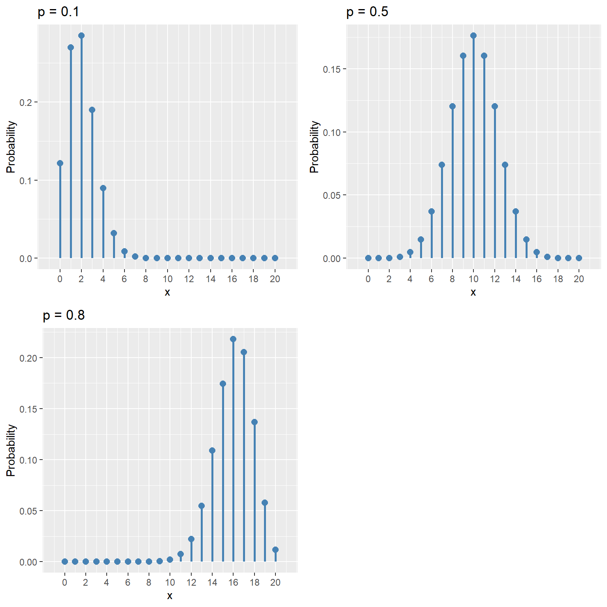
11.6.2 Uniform distribution
A continuous random variable \(Y\) is said to have a uniform distribution on the interval \([a, b]\) if its PDF is constant over this interval. The PDF of \(Y\) is given by \[ \begin{align*} \phi_Y(y) = \begin{cases} \frac{1}{b-a},\quad&a\leq y\leq b,\\ 0,\quad& \text{elsewhere}. \end{cases} \end{align*} \]
If \(Y\) has a uniform distribution on the interval \([a, b]\), we denote this as \(Y\sim U(a,b)\). The CDF of \(Y\) is given by \[ \begin{align*} \Phi_Y(y) = \begin{cases} 0,\quad&y<a,\\ \frac{y-a}{b-a},\quad&a\leq y\leq b,\\ 1,\quad&y>b. \end{cases} \end{align*} \]
The mean and variance of \(Y\) are given by \[ \begin{align*} \E(Y) = \frac{a+b}{2},\quad \text{var}(Y) = \frac{(b-a)^2}{12}. \end{align*} \]
The following code chunk generates the PDF and CDF of the uniform distribution on the interval \([0, 2\pi]\).
# The plots of PDF and CDF of uniform distribution
# Sequence of y values
y <- seq(0, 2*pi, by = 0.01)
# PDF of Uniform(0, 2π)
pdf <- rep(1/(2*pi), length(y))
df_pdf <- data.frame(y = y, pdf = pdf)
ggplot(df_pdf, aes(x = y, y = pdf)) +
geom_line(linewidth = 1) +
geom_vline(xintercept = 2*pi, linetype = "dashed") +
scale_x_continuous(
breaks = c(0, pi/2, pi, 3*pi/2, 2*pi),
labels = c("0", expression(pi/2), expression(pi),
expression(3*pi/2), expression(2*pi)),
limits = c(0, 7.5)
) +
scale_y_continuous(
breaks = c(0, 1/(2*pi)),
labels = c("0", expression(1/(2*pi))),
limits = c(0, 0.5)
) +
labs(x = "y", y = "PDF")
# CDF of Uniform(0, 2π)
cdf <- y / (2*pi)
cdf[y > 2*pi] <- 1
df_cdf <- data.frame(y = seq(0, 7.5, by = 0.01))
df_cdf$cdf <- pmin(df_cdf$y / (2*pi), 1)
ggplot(df_cdf, aes(x = y, y = cdf)) +
geom_line(linewidth = 1) +
geom_vline(xintercept = 0, linetype = "dashed") +
scale_x_continuous(
breaks = c(0, pi/2, pi, 3*pi/2, 2*pi),
labels = c("0", expression(pi/2), expression(pi),
expression(3*pi/2), expression(2*pi)),
limits = c(0, 7.5)
) +
scale_y_continuous(limits = c(0, 1.2)) +
labs(x = "y", y = "CDF")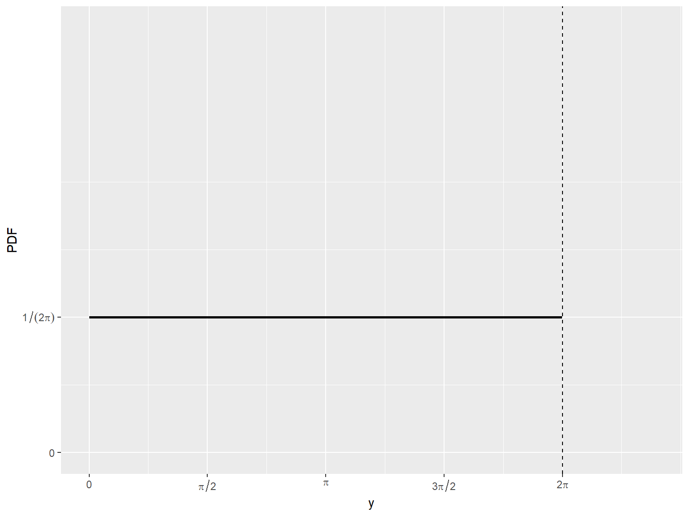
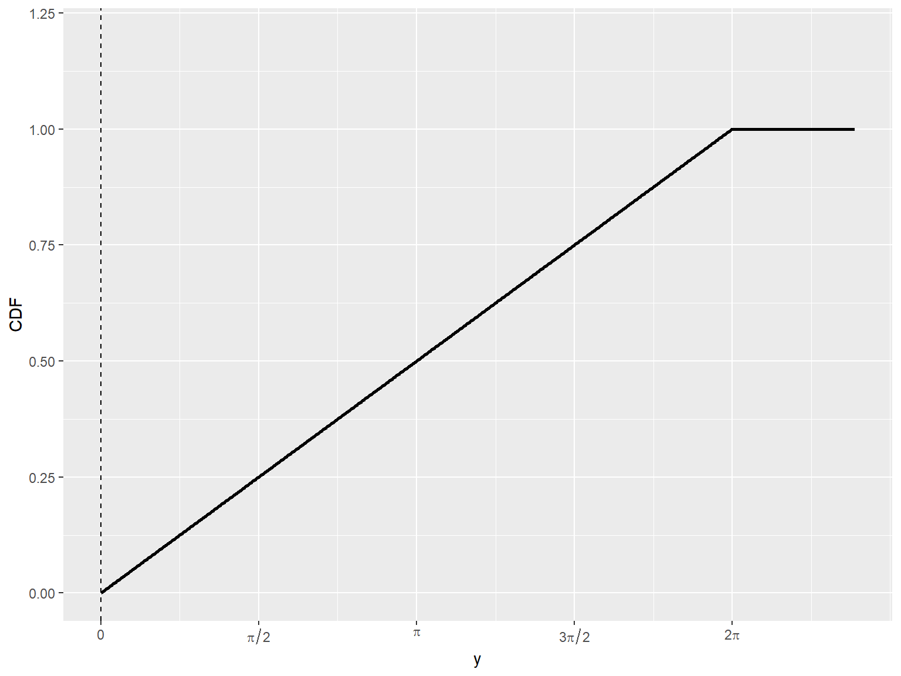
11.6.3 Normal distribution
If the continuous random variable \(Y\) follows the normal distribution with mean \(\mu_Y\) and variance \(\sigma^2_Y\), we denote this as \(Y \sim N(\mu_Y, \sigma_Y^2)\). The PDF and CDF of \(Y\) are defined as \[ \begin{align*} &f_Y(y)=\frac{1}{\sqrt{2\pi}\sigma_Y}e^{-\frac{1}{2\sigma^2_Y}(y-\mu_Y)^2},\\ &F_Y(y)=P(Y\leq y)=\int_{-\infty}^y\frac{1}{\sqrt{2\pi}\sigma_Y}e^{-\frac{1}{2\sigma^2_Y}(y-\mu_Y)^2}\text{d}y. \end{align*} \]
If \(Y\sim N(0,1)\), then we say that \(Y\) has the standard normal distribution. The PDF and the CDF of \(Y\) are denoted by \(\phi_Y(y)\) and \(\Phi_Y(y)\), respectively. These functions are defined as \[ \begin{align*} &\phi_Y(y)=\frac{1}{\sqrt{2\pi}}e^{-\frac{1}{2}y^2},\\ &\Phi_Y(y)=P(Y\leq y)=\int_{-\infty}^y\frac{1}{\sqrt{2\pi}}e^{-\frac{1}{2}y^2}\text{d}y. \end{align*} \]
The CDF does not have a closed form, therefore we need to use numerical methods to compute \(\Phi_Z(z)=P(Z\leq z)\).
Example 11.27 Let \(Y\sim N(0.35,2.25)\) and consider \(P(-0.5<Y\leq 0.75)\), which corresponds to the shaded area illustrated in Figure 11.13. Using the pnorm function, we can compute \(P(-0.5<Y\leq 0.75)\) in the following way:
p <- pnorm(0.75, mean = 0.35, sd = 1.5) - pnorm(-0.5, mean = 0.35, sd = 1.5)
round(p, 4)[1] 0.3197# The area for P(-0.5<Y≤0.75)
# Normal parameters
mu <- 0.35
sd <- 1.5
# Create data for the full PDF curve
y_vals <- seq(-5, 5, by = 0.01)
pdf_vals <- dnorm(y_vals, mean = mu, sd = sd)
df_pdf <- data.frame(y = y_vals, pdf = pdf_vals)
# Create data for the shaded region
x_shade <- seq(-0.5, 0.75, by = 0.001)
pdf_shade <- dnorm(x_shade, mean = mu, sd = sd)
df_shade <- data.frame(x = x_shade, pdf = pdf_shade)
# Plot
ggplot() +
geom_line(data = df_pdf, aes(x = y, y = pdf),
linewidth = 1.2, color = "steelblue") +
geom_area(data = df_shade, aes(x = x, y = pdf),
fill = "lightblue", color = "black", linetype = "dashed") +
geom_point(aes(x = -0.5, y = 0), size = 2) +
geom_point(aes(x = 0.75, y = 0), size = 2) +
labs(x = "y", y = "PDF") +
coord_cartesian(xlim = c(-4, 5))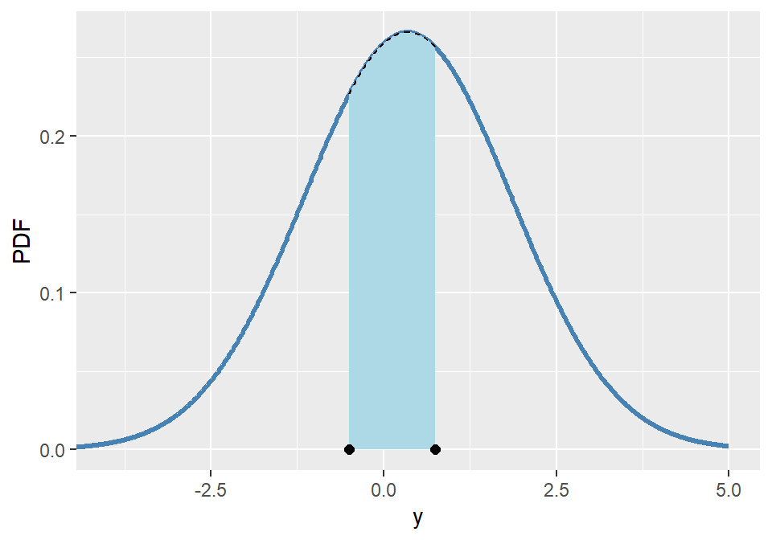
The PDF of \(Y\) is symmetric around its mean \(\mu_Y\) and has a bell-shaped curve. The mean, median, and mode of the normal distribution are all equal to \(\mu_Y\). The variance \(\sigma^2_Y\) determines the spread of the distribution, with larger values indicating a wider spread. Consider \(N(0,1)\), \(N(-2,1)\), and \(N(0,9)\). We use the following code chunk to plot the PDF and CDF of these normal distributions. Figure 11.14 shows the PDF and CDF of these distributions.
# The plots of PDF and CDF of normal distributions
# Data grid
y <- seq(-10, 10, by = 0.01)
df <- data.frame(
y = y,
pdf_01 = dnorm(y, mean = 0, sd = 1),
pdf_m21 = dnorm(y, mean = -2, sd = 1),
pdf_03 = dnorm(y, mean = 0, sd = 3),
cdf_01 = pnorm(y, mean = 0, sd = 1),
cdf_m21 = pnorm(y, mean = -2, sd = 1),
cdf_03 = pnorm(y, mean = 0, sd = 3)
)
# Reshape to long format (simple base R reshape)
df_pdf <- data.frame(
y = rep(y, 3),
value = c(df$pdf_01, df$pdf_m21, df$pdf_03),
dist = factor(c(
rep("μ=0, σ=1", length(y)),
rep("μ=-2, σ=1", length(y)),
rep("μ=0, σ=3", length(y))
), levels = c("μ=0, σ=1", "μ=-2, σ=1", "μ=0, σ=3"))
)
df_cdf <- data.frame(
y = rep(y, 3),
value = c(df$cdf_01, df$cdf_m21, df$cdf_03),
dist = factor(c(
rep("μ=0, σ=1", length(y)),
rep("μ=-2, σ=1", length(y)),
rep("μ=0, σ=3", length(y))
), levels = c("μ=0, σ=1", "μ=-2, σ=1", "μ=0, σ=3"))
)
# Colors
cols <- c("μ=0, σ=1" = "red",
"μ=-2, σ=1" = "black",
"μ=0, σ=3" = "steelblue")
# PDF plot
ggplot(df_pdf, aes(x = y, y = value, color = dist)) +
geom_line(linewidth = 1.2) +
scale_color_manual(values = cols) +
labs(x = "y", y = "PDF") +
theme(legend.position = "top",
legend.title = element_blank(),
legend.key.width = unit(1, "cm"),
legend.text = element_text(size = 12))
# CDF plot
ggplot(df_cdf, aes(x = y, y = value, color = dist)) +
geom_line(linewidth = 1.2) +
scale_color_manual(values = cols) +
labs(x = "y", y = "CDF") +
theme(legend.position = "top",
legend.title = element_blank(),
legend.key.width = unit(1, "cm"),
legend.text = element_text(size = 12))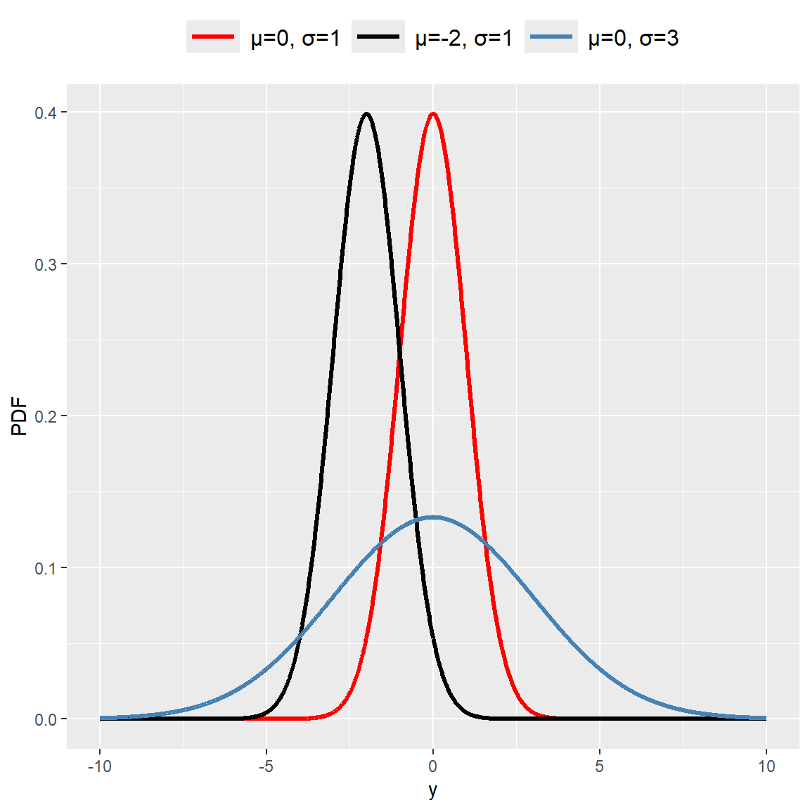
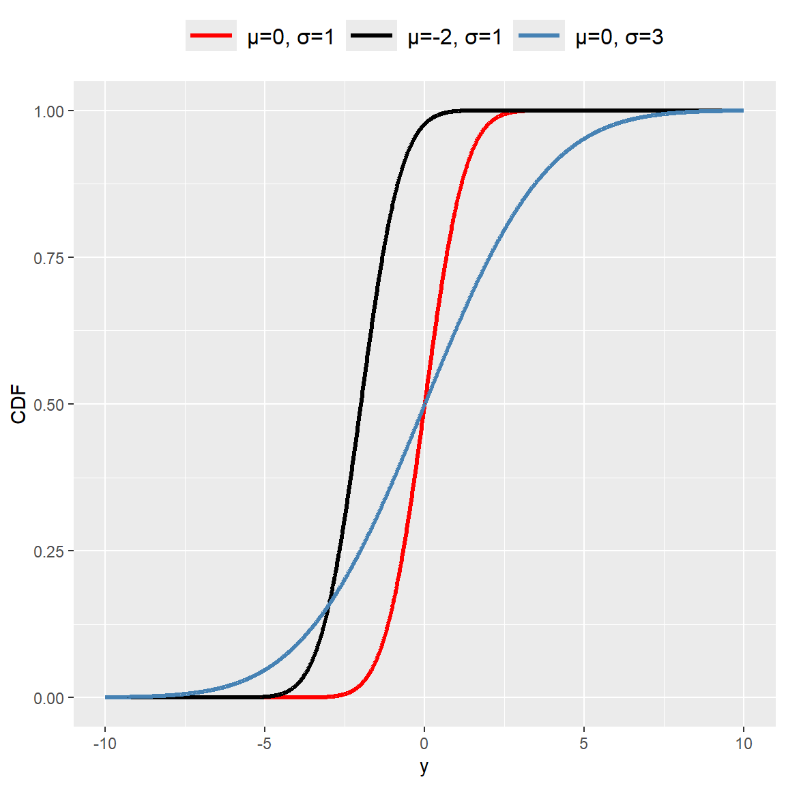
Example 11.28 Let \(Y\sim N(0,1)\). Then, the \(2.5\)th percentile of \(Y\) (the \(0.025\)th quantile of \(Y\)) is the value \(y\) such that \(P(Y\leq y)=0.025\). We can use the qnorm function to compute this value as follows:
y <- qnorm(0.025, mean = 0, sd = 1)
round(y, 3)[1] -1.96In the same way, we can compute the \(97.5\)th percentile of \(Y\):
y <- qnorm(0.975, mean = 0, sd = 1)
round(y, 3)[1] 1.96Below, we illustrate these percentiles on the PDF of \(Y\).
# Data
y <- seq(-4, 4, by = 0.01)
pdf <- dnorm(y)
df <- data.frame(y = y, pdf = pdf)
# Shaded regions
df_shade1 <- df[df$y < -1.96, ]
df_shade2 <- df[df$y > 1.96, ]
# Plot
ggplot(df, aes(x = y, y = pdf)) +
geom_line(color = "steelblue", linewidth = 1) +
geom_area(data = df_shade1, fill = "steelblue", alpha = 0.5) +
geom_area(data = df_shade2, fill = "steelblue", alpha = 0.5) +
geom_vline(xintercept = c(-1.96, 1.96), linetype = "dashed", linewidth = 0.5) +
annotate("text", x = -3, y = 0.1, label = "2.5th percentile", size = 4) +
annotate("text", x = 2.5, y = 0.1, label = "97.5th percentile", size = 4) +
labs(x = "y", y = "PDF") +
xlim(-4, 4)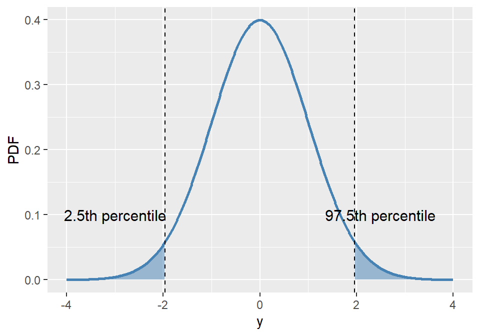
Finally, we collect some important properties of random variables that have normal distributions.
- If \(X\sim N(\mu_X,\sigma^2_X)\), then \((X-\mu_X)/\sigma_X\sim N(0,1)\).
- If \(Y\sim N(\mu_Y,\sigma^2_Y)\), then \(a+bY\sim N(a+b\mu_Y,b^2\sigma^2_Y)\) for any constants \(a\) and \(b\).
- If \(X\) and \(Y\) are jointly normal, then \(X\) and \(Y\) are independent if and only if they are uncorrelated, i.e., \(\text{cov}(X,Y)=0\).
- If \(X_1,\dots,X_n\) are independent and identically distributed (i.i.d.) random variables with \(X_i\sim N(\mu_X,\sigma^2_X)\), then \(\sum_{i=1}^nX_i\sim N(n\mu_X,n\sigma^2_X)\).
11.6.4 Chi-squared distribution
The chi-squared distribution is used when testing certain types of hypotheses in econometrics. The chi-squared distribution that has \(m\) degrees of freedom, denoted by \(\chi^2_{m}\), is the distribution of the sum of \(m\) squared independent standard normal random variables. The mean and variance of the chi-squared distribution are given by \(m\) and \(2m\), respectively.
Example 11.29 Let \(Z_1\), \(Z_2\) and \(Z_3\) be independent standard normal random variables. If we define \(Y=Z^2_1+Z^2_2+Z^2_3\), then \(Y\sim \chi^2_3\). We can use the dchisq and pchisq function to compute the PDF and CDF of \(Y\), respectively. For example, we can compute \(P(Y\leq 5)\) as follows:
p <- pchisq(5, df=3)
round(p, 4)[1] 0.8282In Figure 11.16, we show the PDF and CDF of \(\chi^2_3\), \(\chi^2_4\), and \(\chi^2_{10}\). The figure indicates that the chi-squared distribution is right-skewed, and as \(m\) increases, the distribution becomes more symmetric.
# y values
y <- seq(0, 20, by = 0.01)
# Base R reshape into long format
df <- data.frame(
y = rep(y, 3),
value = c(dchisq(y, 3), dchisq(y, 4), dchisq(y, 10)),
df_label = factor(rep(c("m=3", "m=4", "m=10"), each = length(y)))
)
cdf_df <- data.frame(
y = rep(y, 3),
value = c(pchisq(y, 3), pchisq(y, 4), pchisq(y, 10)),
df_label = factor(rep(c("m=3", "m=4", "m=10"), each = length(y)))
)
# Pdf plot
ggplot(df, aes(x = y, y = value, color = df_label)) +
geom_line(linewidth = 1) +
scale_color_manual(values = c("red", "black", "steelblue")) +
labs(x = "y", y = "PDF", color = "")
# Cdf plot
ggplot(cdf_df, aes(x = y, y = value, color = df_label)) +
geom_line(linewidth = 1) +
scale_color_manual(values = c("red", "black", "steelblue")) +
labs(x = "y", y = "CDF", color = "")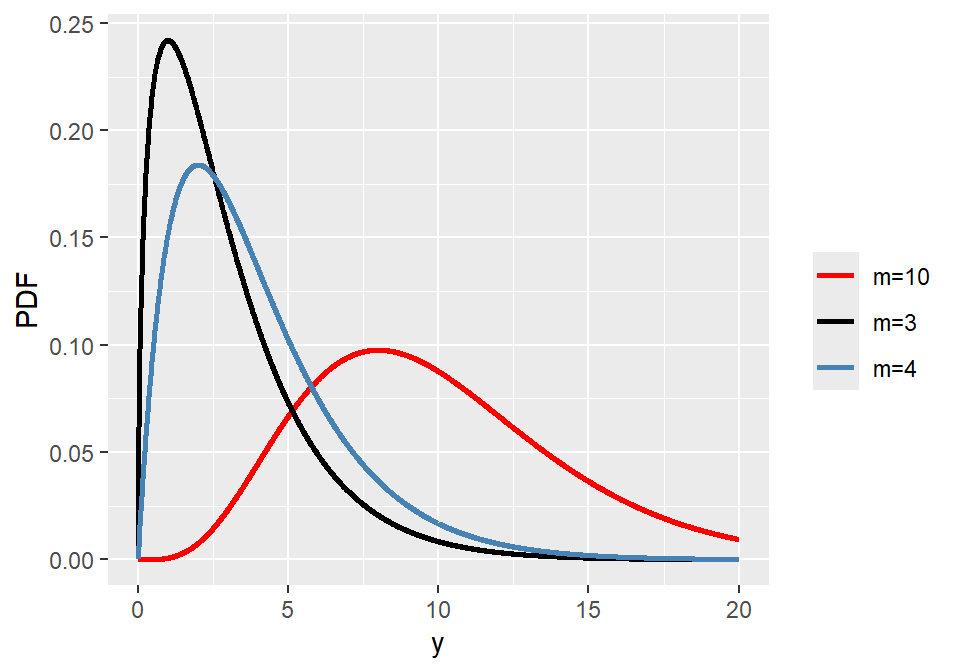
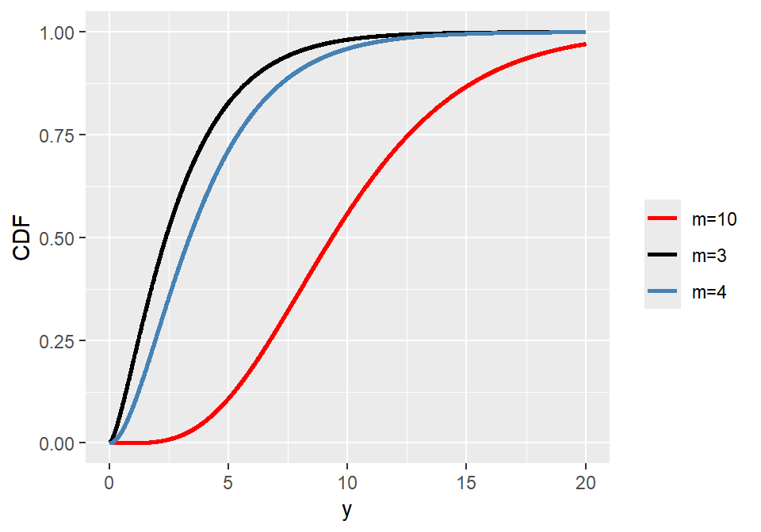
11.6.5 Student t distribution
The Student t distribution with \(m\) degrees of freedom, denoted by \(t_m\), is defined as the distribution of the ratio of a standard normal random variable to the square root of an independently distributed chi-squared random variable with \(m\) degrees of freedom divided by \(m\). Specifically, let \(Z\sim N(0,1)\) and \(W\sim\chi^2_m\). Assuming that \(Z\) and \(W\) are independent, then we have \[ \frac{Z}{\sqrt{W/m}}\sim t_m. \]
In Figure 11.17, we compare the PDF and CDF of \(t_1\) and \(t_{10}\) with that of \(N(0,1)\). The \(t\) distribution has a bell shape similar to that of the normal distribution but exhibits more mass in the tails, resulting in a “fatter” bell shape compared to the normal distribution. In general, when \(m\) is \(30\) or more, the \(t\) distribution closely approximates the standard normal distribution.Formally, as \(𝑚\) approaches infinity, the \(t\) distribution converges to the standard normal distribution.
# t values
t_values <- seq(-4, 4, by = 0.01)
# PDF
pdf_df <- data.frame(
t = rep(t_values, 3),
value = c(dnorm(t_values, 0, 1),
dt(t_values, df = 1),
dt(t_values, df = 10)),
dist = factor(rep(c("N(0,1)", "t_1", "t_10"), each = length(t_values)),
levels = c("N(0,1)", "t_1", "t_10"))
)
ggplot(pdf_df, aes(x = t, y = value, color = dist)) +
geom_line(linewidth = 1) +
scale_color_manual(values = c("red", "steelblue", "black")) +
labs(x = "t", y = "PDF", color = "")
# CDF
cdf_df <- data.frame(
t = rep(t_values, 3),
value = c(pnorm(t_values, 0, 1),
pt(t_values, df = 1),
pt(t_values, df = 10)),
dist = factor(rep(c("N(0,1)", "t_1", "t_10"), each = length(t_values)),
levels = c("N(0,1)", "t_1", "t_10"))
)
ggplot(cdf_df, aes(x = t, y = value, color = dist)) +
geom_line(linewidth = 1) +
scale_color_manual(values = c("red", "steelblue", "black")) +
labs(x = "t", y = "CDF", color = "")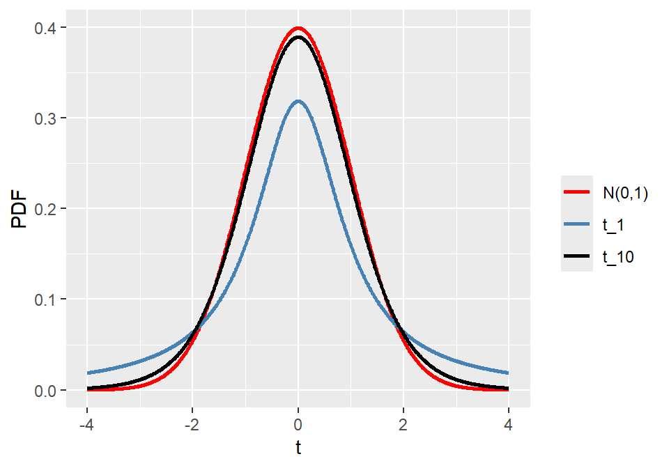
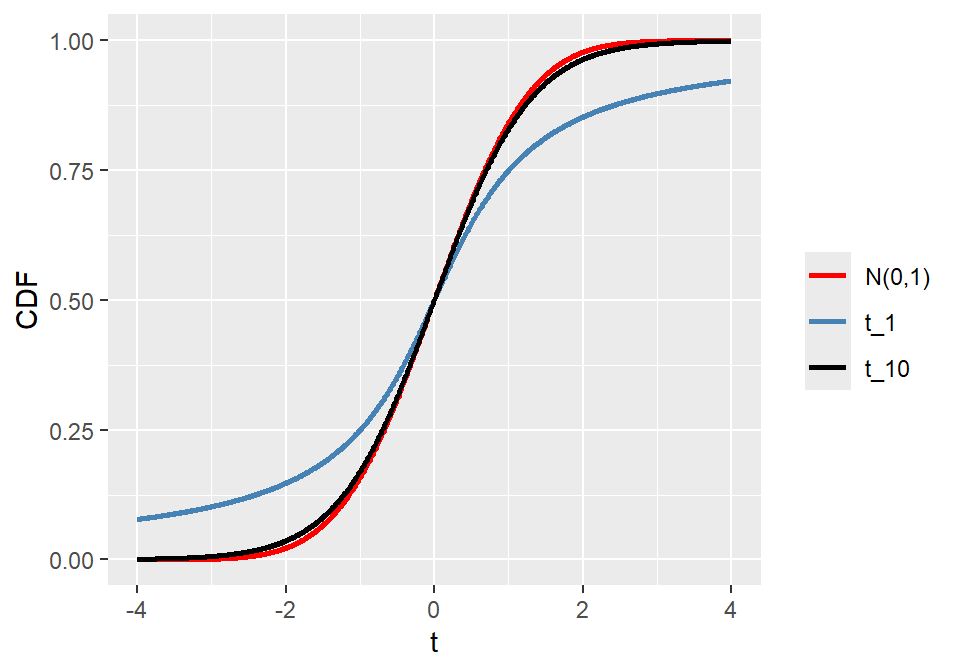
Example 11.30 Let \(Y\sim N(0,1)\) and \(X\sim t_{5}\). We want to compute \(P(Y\geq2)\) and \(P(X\geq2)\). The following code chunk shows how to compute these probabilities:
p_y <- 1 - pnorm(2, mean = 0, sd = 1) # P(Y >= 2)
p_x <- 1 - pt(2, df = 5) # P(X >= 2)
round(p_y, 4)[1] 0.0228round(p_x, 4)[1] 0.051We see that \(P(X\geq2)\) is larger than \(P(Y\geq2)\), which indicates that the \(t\) distribution has more mass in the tails compared to the normal distribution, i.e., its tails are heavier.
11.6.6 F distribution
The \(F\) distribution with \(m\) and \(n\) degrees of freedom is denoted by \(F_{m,n}\). Let \(W\sim\chi^2_m\) and \(V\sim\chi^2_n\). Assume that \(W\) and \(V\) are independent. Then, we have \[ \frac{W/m}{V/n}\sim F_{m,n}. \]
Let \(Y\sim F_{m,n}\). Then, the mean and variance of \(Y\) are given by \[ \begin{align*} &\E(Y) = \frac{n}{n-2},\\ &\text{var}(Y) = \frac{2n^2(m+n-2)}{m(n-2)^2(n-4)},\quad n>4. \end{align*} \]
The \(F\) distribution is right-skewed, and as \(m\) and \(n\) increase, the distribution becomes more symmetric. In Figure 11.18, we provide the plots of PDF and CDF of \(F_{1,10}\), \(F_{5,50}\), and \(F_{10,100}\).
# The plots PDF and CDF of F distributions
# Define u values
u <- seq(0, 8, by = 0.01)
# PDF
pdf_df <- data.frame(
u = rep(u, 3),
value = c(df(u, df1 = 1, df2 = 10),
df(u, df1 = 5, df2 = 50),
df(u, df1 = 10, df2 = 100)),
dist = factor(rep(c("m=1, n=10", "m=5, n=50", "m=10, n=100"), each = length(u)),
levels = c("m=1, n=10", "m=5, n=50", "m=10, n=100"))
)
ggplot(pdf_df, aes(x = u, y = value, color = dist)) +
geom_line(linewidth = 1) +
scale_color_manual(values = c("red", "steelblue", "black")) +
labs(x = "u", y = "PDF", color = "") +
ylim(0, 1)
# CDF
cdf_df <- data.frame(
u = rep(u, 3),
value = c(pf(u, df1 = 1, df2 = 10),
pf(u, df1 = 5, df2 = 50),
pf(u, df1 = 10, df2 = 100)),
dist = factor(rep(c("m=1, n=10", "m=5, n=50", "m=10, n=100"), each = length(u)),
levels = c("m=1, n=10", "m=5, n=50", "m=10, n=100"))
)
ggplot(cdf_df, aes(x = u, y = value, color = dist)) +
geom_line(linewidth = 1) +
scale_color_manual(values = c("red", "steelblue", "black")) +
labs(x = "u", y = "CDF", color = "") +
ylim(0, 1.02)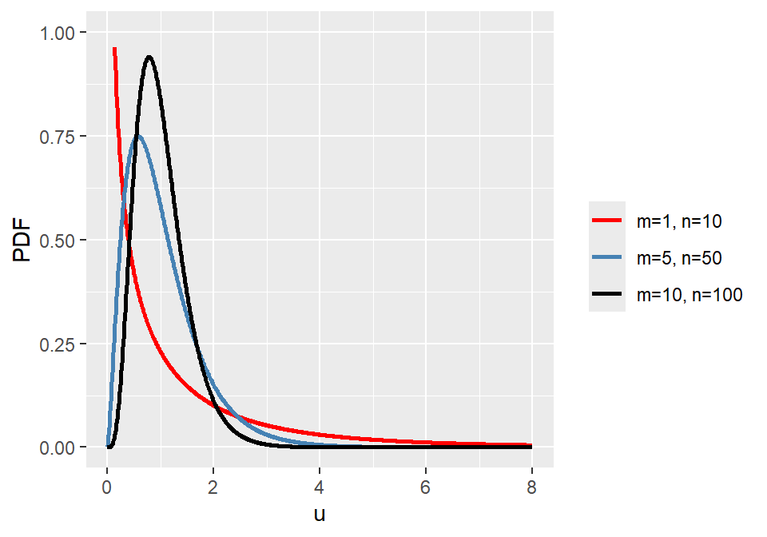
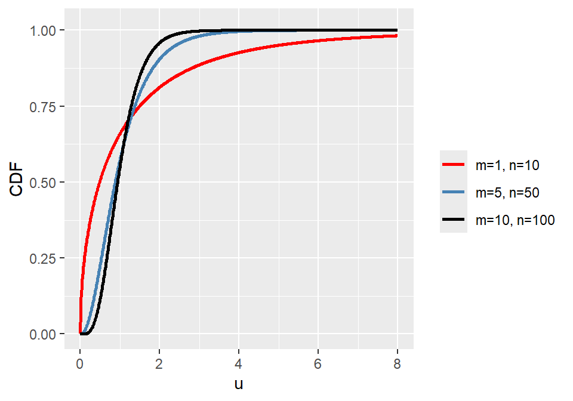
In econometrics, an important special case of the \(F\) distribution arises when the denominator degrees of freedom is large enough that the \(F_{m,n}\) can be approximated by \(F_{m,\infty}\). \(F_{m,\infty}\) distribution is the distribution of a chi-squared random variable with \(m\) degrees of freedom divided by \(m\), i.e., \(F_{m,\infty}=W/m\), where \(W\sim\chi^2_m\).
Example 11.31 Let \(Y\sim F_{2,10}\). We can compute the PDF and CDF of \(Y\) using the df() and pf() functions, respectively. For example, we can compute \(P(Y\leq 3)\) as follows:
p <- pf(3, df1 = 2, df2 = 10)
round(p, 4)[1] 0.9046This is the area under the PDF of \(F_{2,10}\) to the left of \(3\). In the following code chunk, we illustrate this area by shading the region under the PDF of \(F_{2,10}\) to the left of \(3\).
# The area under the PDF of F(2,10) to the left of 3
y <- seq(0, 8, by = 0.01)
pdf <- df(y, df1 = 2, df2 = 10)
df <- data.frame(y = y, pdf = pdf)
# Shaded area to the left of 3
df_shade <- df[df$y <= 3, ]
# Plot
ggplot(df, aes(x = y, y = pdf)) +
geom_line(color = "steelblue", linewidth = 1) +
geom_area(data = df_shade, aes(x = y, y = pdf), fill = "lightblue") +
geom_vline(xintercept = 3, linetype = "dashed", color = "black", alpha = 0.5, linewidth = 1) +
geom_hline(yintercept = 0, color = "black", alpha = 0.5, linewidth = 1) +
scale_x_continuous(breaks = 0:7, labels = 0:7) +
labs(x = "y", y = "Density") +
xlim(0, 8)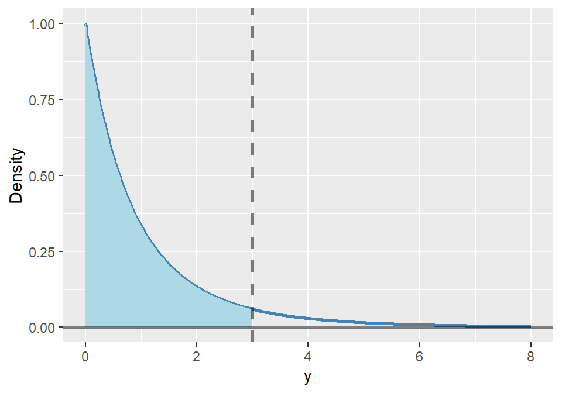
11.7 Random sampling and the distribution of the sample average
If \(Y_1,\dots,Y_n\) are independent random variables from the same population distribution, then they are said to be independently and identically distributed (i.i.d.) random variables. We say that \(Y_1,\dots,Y_n\) constitute a random sample or an i.i.d. sample from the population distribution.
Assume that \(Y_1,Y_2,\dots,Y_n\) are i.i.d. random variables from a population distribution that has mean \(\mu_Y\) and varinace \(\sigma_Y^2\). Consider the sample mean \(\bar{Y}=\frac{1}{n}\sum_{i=1}^nY_i\). Then, \[ \begin{align*} &\E(\bar{Y}) = \E\left(\frac{1}{n}\sum_{i=1}^n Y_i\right) = \frac{1}{n}\sum_{i=1}^n E\left(Y_i\right) = \frac{1}{n}\sum_{i=1}^n \mu_Y = \mu_Y,\\ &\text{var}(\bar{Y}) = \text{var}\left(\frac{1}{n}\sum_{i=1}^n Y_i\right) = \frac{1}{n^2}\sum_{i=1}^n \text{var}\left(Y_i\right) = \frac{1}{n^2}\sum_{i=1}^n \sigma_Y^2 = \frac{\sigma_Y^2}{n}. \end{align*} \]
These results indicate that \(\bar{Y}\) is an unbiased estimator of \(\mu_Y\), i.e., \(\E(\bar{Y})=\mu_Y\), and \(\text{var}(\bar{Y})\) is inversely proportional to \(n\).
Definition 11.17 (Convergence in Probability) We say that the sample average \(\bar{Y}\) converges in probability to \(\mu_Y\) if the probability that \(\bar{Y}\) falls within the interval \((\mu_Y - c,\mu_Y + c)\) approaches \(1\) as \(n\) increases, for any constant \(c> 0\). The convergence in probability is denoted as \(\bar{Y}\xrightarrow{p}\mu_Y\). Formally, this can be expressed as \[ \lim_{n\to\infty}P(|\bar{Y}-\mu_Y|<c)=1. \]
If \(\bar{Y}\) converges in probability to \(\mu_Y\), then we say that \(\bar{Y}\) is a consistent estimator of \(\mu_Y\). In the next chapter, we will discuss the properties of estimators in more detail. The law of large numbers ensures that \(\bar{Y}\) is a consistent estimator of \(\mu_Y\).
Theorem 11.10 (The Law of Large Numbers) If \(Y_1,\dots, Y_n\) are independently and identically distributed with \(E(Y_i) = \mu_Y\) and \(\text{var}(Y_i)=\sigma^2_Y<\infty\), then \(\bar{Y}\xrightarrow{p}\mu_Y\).
To illustrate the law of large numbers, assume that \(Y_1, \dots, Y_n\) are i.i.d. random variables from a Bernoulli distribution with success probability \(p = 0.78\). We consider the sampling distribution of \(\bar{Y}\) for various sample sizes \(n\). According to the law of large numbers, \(\bar{Y}\) should converge in probability to \(0.78\) as \(n\) becomes larger. Figure 11.20 shows the sampling distribution of \(\bar{Y}\) for \(n \in \{2, 5, 25, 100\}\). We observe that the variance of the sampling distribution of \(\bar{Y}\) decreases as \(n\) increases, causing the distribution to become more tightly concentrated around its mean, \(\mu_Y = 0.78\), represented by the vertical dashed line in red.
# The sampling distribution of the sample average
# Set parameters
reps <- 5000
sample_sizes <- c(2, 5, 25, 100)
p <- 0.78
plots <- list()
for (n in sample_sizes) {
# Simulate sample means
sample_means <- replicate(reps, mean(rbinom(n, size = 1, prob = p)))
df <- data.frame(mean = sample_means)
# Histogram plot
p_hist <- ggplot(df, aes(x = mean)) +
geom_histogram(aes(y = ..density..), bins = min(50, n*10), fill = "steelblue", color = "black") +
geom_vline(xintercept = p, color = "red", linetype = "dashed", linewidth = 1) +
xlim(0, 1) +
labs(x = paste0("n = ", n), y = "Density")
plots[[paste0("n", n)]] <- p_hist
}
# Arrange 2x2 grid
grid.arrange(plots$n2, plots$n5, plots$n25, plots$n100, ncol = 2)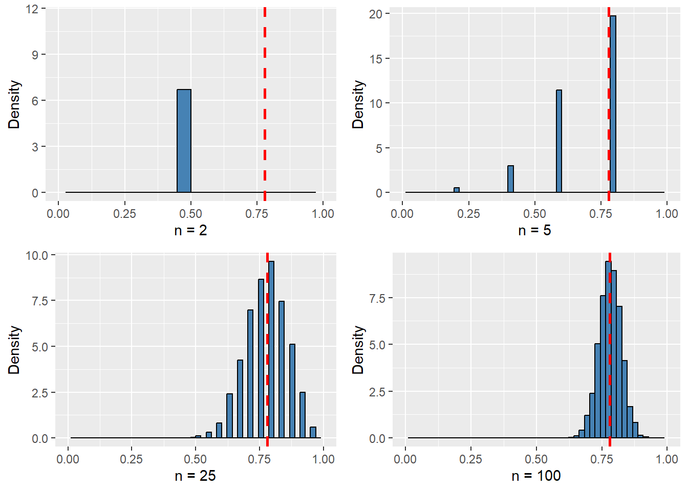
The distribution of \(\bar{Y}\) is called the sampling distribution of \(\bar{Y}\). If we assume that \(Y_i\sim N(\mu_Y,\sigma_Y^2)\) for \(i=1,\dots,n\), then the sampling distribution of \(\bar{Y}\) is \(N(\mu_Y, \sigma_Y^2/n)\). However, if we do not want to make the assumption that \(Y_i\sim N(\mu_Y,\sigma_Y^2)\) for \(i=1,\dots,n\), then the sampling distribution \(\bar{Y}\) can be approximated when the sample size is large. We call the approximated distribution the asymptotic distribution.
The central limit theorem (CLT) says that, under general conditions, the distribution of \(\bar{Y}\) is well approximated by a normal distribution when \(n\) is large.
Theorem 11.11 (The Central Limit Theorem) If \(Y_1,\dots, Y_n\) are independently and identically distributed with \(E(Y_i) = \mu_Y\) and \(\text{var}(Y_i)=\sigma^2_Y<\infty\), then \(\frac{\bar{Y}-\mu_Y}{\sqrt{\text{var}(\bar{Y})}}=\frac{\bar{Y}-\mu_Y}{\sigma_Y/\sqrt{n}}\) is well approximated by \(N(0,1)\).
The CLT implies that \(\bar{Y}\sim N(\mu_Y,\sigma^2_Y/n)\) when \(n\) is large. To illustrate the CLT, assume that \(Y_1, \dots, Y_n\) are i.i.d. random variables from a Bernoulli distribution with success probability \(p = 0.5\). We consider the sampling distribution of \(\frac{\bar{Y}-\mu_Y}{\sigma_Y/\sqrt{n}}\) for various sample sizes \(n\), where \(\sigma^2_Y=p(1-p)\). Figure 11.21 shows the histogram plot of \(\frac{\bar{Y}-\mu_Y}{\sigma_Y/\sqrt{n}}\) for \(n \in \{5, 20, 75, 100\}\) along with the PDF plot of the standard normal distribution. The figure indicates that the distribution of \(\frac{\bar{Y}-\mu_Y}{\sigma_Y/\sqrt{n}}\) becomes more closely approximated by the standard normal distribution as \(n\) increases.
# The sampling distribution of the standardized sample average
# Set some parameters
set.seed(123)
reps <- 1000
sample_sizes <- c(5, 20, 75, 100)
p = 0.5
# A function for generating one plot for each sample size
make_plot <- function(n) {
z <- replicate(reps, {
x <- rbinom(n, 1, p)
sqrt(n) * (mean(x) - p) / sqrt(p * (1 - p))
})
df <- data.frame(z = z)
ggplot(df, aes(x = z)) +
geom_histogram(
aes(y = after_stat(density)),
bins = 50,
fill = "steelblue",
color = "white"
) +
stat_function(
fun = dnorm,
linewidth = 1,
color = "black"
) +
coord_cartesian(xlim = c(-3, 3), ylim = c(0, 0.8)) +
labs(x = paste("n =", n), y = "Density")
}
# Create plots
plots <- lapply(sample_sizes, make_plot)
# Arrange in a 2-by-2 grid
grid.arrange(
grobs = plots,
ncol = 2
)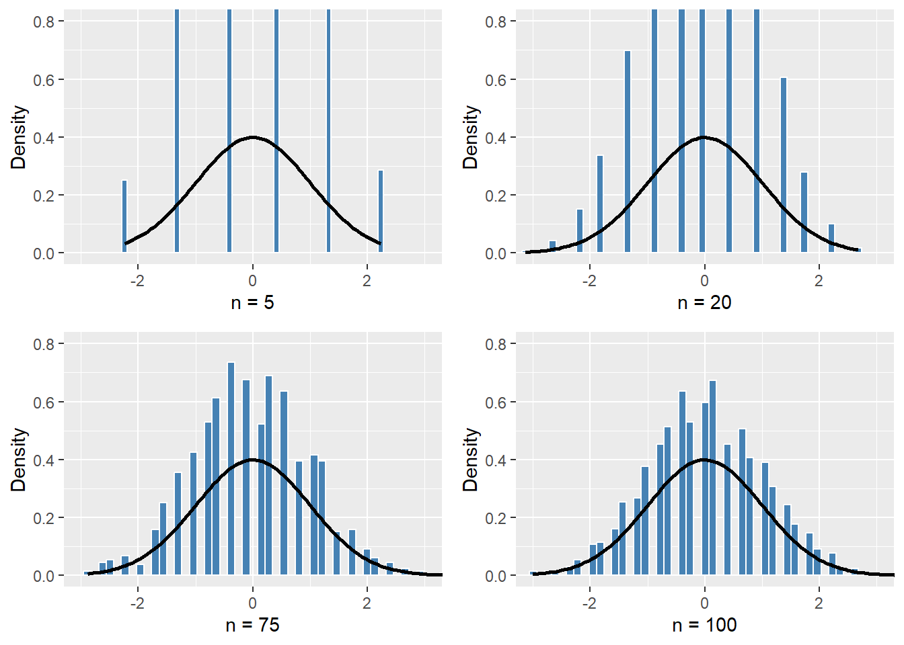
In Chapter 27, we provide a more detailed discussion of asymptotic analysis, including probability inequalities, Slutsky’s theorem, and the continuous mapping theorem, which are useful results for applying the law of large numbers and the central limit theorem.
See the mutual exclusivity entry on Wikipedia.↩︎
Formally, probability is a set function defined on the \(\sigma\)-algebra of the subsets of the sample space \(\Omega\). A \(\sigma\)-algebra is a collection of subsets of \(\Omega\) that includes the empty set and is closed under complementation and countable unions. See Probability Measure on Wikipedia for more details.↩︎